Os Piratas do Chapéu de Palha, também conhecidos como a Tripulação do Chapéu de Palha ou simplesmente Chapéus de Palha, são uma tripulação pirata ascendente e infame que se originou do East Blue, mas que possui vários membros de locais diferentes. Eles são o principal foco e protagonistas do mangá e anime One Piece, e são liderados pelo protagonista principal, Monkey D. Luffy. Os "Chapéus de Palha" foram nomeados assim devido a assinatura de Luffy, seu chapéu, que foi dado a ele por Shanks, o Ruivo. Eles foram referidos assim pela primeira vez por Smoker em Alabasta. A tripulação navegou no Going Merry, o primeiro navio oficial dos Chapéus de Palha, até o Arco Water 7. Durante o Arco Pós-Enies Lobby, Franky e Iceburg construíram um novo navio que foi chamado de Thousand Sunny por Iceberg, embora os membros lutassem por nomes diferentes.
Na sequência dos eventos no Arquipélago de Sabaody, todos os nove membros foram separados um do outro. Por dois anos, eles treinaram em locais relativamente isolados, tornando-se mais fortes para ajudar uns aos outros. Eles então se reuniram e, desde então, têm se tornado uma força ativa e massiva no Novo Mundo, derrotando o homem mais importante no Submundo e removendo-o do poder, tendo uma enorme e poderosa frota pirata se formando para servir sob eles e adicionando o ex-Shichibukai Jinbe à sua tripulação. Eles até conseguiram levar uma das armas vivas da Yonkou Big Mom, Zeus, para sua tripulação, como servo voluntário de Nami.
Membros da Equipe
Tripulação Principal
Como resultado das escolhas de Luffy sobre quem se junta à tripulação, os Chapéus de Palha são notáveis por serem uma das mais variadas, se não bizarras, tripulações piratas no mundo de One Piece.
Suas posições têm membros muito diferentes uns dos outros. Estes incluem um médico que é uma rena que muda de forma e que pode ser confundida com outra coisa, dependendo da sua forma, como um gorila quando é um humano completo ou um tanuki quando está na sua forma habitual; um cyborg que é um carpinteiro e que tem um comportamento muito excêntrico e não usa quase nada, exceto camisas e cuecas de natação; e um músico esquelético animado, morto-vivo e pervertido. Se suas vidas e atividades anteriores são consideradas, isso só aumenta a estranheza coletiva da tripulação: o capitão tem uma família composta de pessoas infames e perigosas; seu combatente era um ex-caçador de recompensas; seu cozinheiro é um príncipe fugitivo de uma família de assassinos reais; seu atirador é um mentiroso compulsivo cujo pai é membro da tripulação de um Yonkou; e sua navegadora é uma ladra especializado em roubar piratas. Sua arqueóloga também trabalhou para uma organização criminosa anteriormente dirigida por um Shichibukai, e ela também é uma assassina habilidosa e a única sobrevivente de Ohara. O timoneiro da tripulação é um Homem-Peixe que não era apenas um ex-Shichibukai e capitão dos Piratas do Sol, mas também um ex-prisioneiro da Grande Prisão, que é onde ele conheceu Luffy. A tripulação até capturou uma arma viva e Homie, anteriormente sob o controle de um dos Yonkou, e tê-lo de bom grado tornar-se um servo para a tripulação.
Nefertari Vivi é a princesa da coroa de Alabasta, que junto com seu pato de estimação Karoo acabou viajando com os Piratas do Chapéu de Palha durante a maior parte da Saga Alabasta. Ela foi convidada a continuar navegando com a tripulação após a guerra em Alabasta, mas, no final, decidiu permanecer em Alabasta para cumprir seus deveres reais.
Os Chapéus de Palha têm quatro usuários da Fruta do Diabo: Luffy, Chopper, Robin e Brook. A maior parte da tripulação é bastante jovem, com três membros em seus vinte anos, três ainda sendo adolescentes e quatro membros com trinta anos ou mais, embora dois dos quatro membros mais antigos sejam tão infantis quanto os outros. Diferentemente da maioria dos tripulantes, eles consideram que seus navios também são membros da tripulação.
Piratas do Chapéu de Palha
Monkey D. Luffy
Roronoa Zoro
Nami
Ussop
Sanji
Tony Tony Chopper
Nico Robin
Fraky
Brook
Jinbe
Nefertari D. Vivi
companheiros
Zeus
Carue
Navios
Going Merry
Thousand Sunny
Aliados
Aliança Ninja-Pirata- Mink-Samurai
Galley-La Company
Família Franky
Piratas Fire Tank
Subgrupos
Durante suas aventuras, os membros da tripulação frequentemente se dividiram em grupos menores para alcançar múltiplos alvos ou tarefas. Principalmente, o grupo está dividido pelas tarefas comuns de explorar ilhas (frequentemente lideradas por Luffy), guarda de navios (frequentemente liderada por Zoro que deseja cochilar ou por Usopp que tem medo de desembarcar), e coleta de suprimentos (liderada por Sanji ou Nami para alimentos e finanças). Ao encontrar inimigos, a tripulação costumava lutar individualmente contra seus rivais, no entanto, às vezes, eles lutam em grupos como Usopp e Chopper em Alabasta, ou durante a luta contra Davy Back.
Durante o Arco Dressrosa, a tripulação temporariamente se dividiu ao meio, com um grupo ficando para terminar os negócios em Dressrosa e o outro indo para Zou para proteger Caesar Clown e Kozuki Momonosuke. O grupo indo para Zou (Sanji , Nami, Chopper, e Brook) foi referido como a Tripulação do Chapéu Encaracolado, em homenagem a Sanji, o líder da equipe. Este mesmo grupo forma o núcleo do Time de Resgate do Sanji durante o Arco Ilha Whole Cake, mas com algumas mudanças de pessoal: Luffy retomou a liderança, Sanji está desaparecido na Ilha Whole Cake, e os Minks Pedro e Carrot estão acompanhando-os em sua busca para "recuperar Sanji". Durante a missão, eles se juntaram a Jinbe que mais tarde se juntaria oficialmente aos Chapéus de Palha.[
Grande Frota
No final do Arco Dressrosa, a tripulação se torna líder de uma aliança chamada Grande Frota do Chapéu de Palha, que envolve sete grupos que ficaram do lado de Luffy no conflito entre ele e Doflamingo, tornando-se subordinados aos Chapéus de Palha, enquanto mantêm seu status como tripulações individuais com sua própria vontade.
Cavendish, Bartolomeo, Sai, Ideo, Leo, Hajrudin, e Orlumbus pediram para se tornarem subordinados de Luffy, oferecendo-lhe uma xícara de saquê. Luffy recusou, mas disse que eles ainda estariam ligados por sua luta contra Doflamingo e eles se ajudariam mutuamente a qualquer momento. No entanto, os capitães decidiram beber o saquê de qualquer maneira, prometendo ir ao auxílio de Luffy sempre que ele precisasse, enquanto Luffy não era obrigado a fazer o mesmo. A Grande Frota do Chapéu de Palha, composta por 5640 pessoas, foi então formada, e uma festa se seguiu quando sua frota partiu de Dressrosa.
Grande Frota do Chapéu de Palha
Capitão
Monkey D. Luffy
Nove Oficiais Veteranos
Roronoa Zoro
Nami
Ussop
Sanji
Tony Tony Chopper
Nico Robin
Franky
Brook
Jinbe
representantes
Cavendish
Bartolomeo
Sai
Ideo
Leo
Hajrudin
Orlumbus
Tripulaões
Piratas Belos
Barto Club
Armada Happo
Piratas Ideo
Piratas Tontatta
Novos Piratas Guerreiros Gigantes
Grande Frota do Yonta Maria
Aliados
Família Riku
Elizabello II
Territórios Protegidos
Enquanto os Piratas do Chapéu de Palha não mostraram nenhum interesse em tomar o controle de territórios como os outros grandes nomes, eles conseguiram se tornar amigos e aliados com os líderes de várias nações insulares.
A família real governante da Ilha dos Homens-Peixe mostrou interesse em querer declarar sua ilha como um território dos Piratas do Chapéu de Palha e depois que a notícia de sua luta contra a Big Mom foi tornada pública, eles decidiram declarar que sua ilha estava sob a proteção dos Piratas do Chapéu de Palha.
Além disso, Bartolomeo e seu Barto Club (da Grande Frota do Chapéu de Palha) têm visitado e ajudado as ilhas sob a proteção dos Yonkou (especificamente Shanks) enquanto queimam as bandeiras de seus protetores na tentativa de vendê-los. e espalhar a palavra dos Piratas do Chapéu de Palha.
Profissões e capacidades
Nome
Profissão
Recursos
Apelidos
Monkey D. Luffy
Capitão
Gênio Lutador
Estilo de Luta Livre
Gomu Gomu no Mi
Kenbunshoku Haki
Busoshoku Haki Avançado
Haoshoku Haki Avançado
Alta Capacidade Alimentar
Grande Força Física
Grande Velocidade e Agilidade
Liderança
"Chapéu de Palha" (麦わら Mugiwara)
"O Quinto Imperador" (５番目の皇帝Gobanme no Kōtei)
Roronoa Zoro
Espadachim
Poderes Espadachim
Santoryu
Kenbunshoku Haki
Busoshoku Haki
Haoshoku Haki
Grande Força Física
Grande Velocidade e Agilidade
"Caçador de Piratas" (海賊狩り Kaizoku Gari)
Nami
Navegadora
Lutadora Pessoal Bo
Cartógrafo
Qualificação Navegadora
Ladra Perita
Controladora do Clima
Alta Inteligência
Proprietária de uma Arma Viva
"Gata Ladra" (泥棒猫 Dorobō Neko)
Usopp
Atirador
Boa Pontaria
Artilheiro
Inventor Criativo
Mentiroso Compulsivo
Usuário de Pop Green
Sagacidade Tática
Arsenal do Usopp
Kenbunshoku Haki
Alta Resistência
"Sogeking" (そげキング Sogekingu)
"Rei dos Atiradores" (狙撃の王様 Sogeki no Ō-sama)
"Deus" (ゴッド Goddo)
Vinsmoke Sanji
Cozinheiro
Estilo Perna Negra
Kenbunshoku Haki
Busoshoku Haki
Grande Experiência Culinária
Artista Marcial
Sagacidade Tática
Grande Força Física
Grande Velocidade e Agilidade
Alta Inteligência
Furtividade
"Perna Negra" (黒脚 Kuro Ashi)
Tony Tony Chopper
Médico
Avançadas Habilidades Médicas
Compreensão do Discurso Animal
Estilo de Luta Livre
Hito Hito no Mi
Kung Fu
Rumble Ball
Luta
Grande Força Física
"Amante de Algodão Doce" (わたあめ大好き Wataame Daisuki)
Nico Robin
Arqueóloga
Assassinato
Perita em Espionagem
Estilo de Luta Livre
Hana Hana no Mi
Historiadora
Poneglyph Leitora
Sagacidade Tática
Alta Inteligência
"Criança Demoniaca" (悪魔の子 Akuma no Ko)
"Luz da Revolução" (革命の灯Kakumei no Tomoshibi)
Franky
Fabricante de Navios
Boxing
Cyborg Modificações
Engenheiro Altamente Qualificado
Mestre em Fabricar Navios
Franky Shogun
Arsenal Versátil
Grande Força Física
"Cyborg" (鉄人 Saibōgu)
"Homem de Ferro" (鉄人 Tetsujin)
Brook
Músico
Espadachim Rápido
Estilo de Esgrima
Musico de Alta Classe
Yomi Yomi no Mi
Hipnotismo
Corpo Leve
Grande Velocidade e Agilidade
Pirata Veterano
"Cantarolante" (鼻唄 Hanauta)
"Soul-King" (魂王 Souru Kingu, Tamashī-ō)
Jinbe
Timoneiro
Comunicação Com a Vida Marinha
Karatê Homem-Peixe
Jujutsu Homem-Peixe
Força Homem-Peixe
Busoshoku Haki
Gênio Tático
Diplomata Especialista
Habilidades Avançadas de Timoneiro
Natação Rápida
Grande Força Física
Pirata Veterano
"Cavaleiro do Mar" (ジンベエ Jinbē)
Sonhos
Cada membro dos Chapéus de Palha tem um sonho que eles querem alcançar. Esses sonhos são suas razões para se juntar a equipe de Luffy, e essencialmente a força motriz por trás de suas vidas. O sonho de cada membro da tripulação foi inspirado por tragédias (muitas vezes mortes) em suas infâncias que envolviam pelo menos uma pessoa que idolatravam e cuidavam profundamente. Alguns, como Zoro, Nami, Usopp, Chopper, e Franky estão cumprindo seus sonhos através da acumulação de conhecimento e/ou alcançar uma determinada tarefa enquanto navega na Grand Line. Outros, como Luffy, Sanji, Robin, e Brook estão à procura de uma pessoa, lugar ou coisa que só pode ser encontrado na Grand Line. Seja qual for a razão, cada um dos sonhos do Chapéu de Palha envolve viajar a Grand Line, e cada membro do Chapéu de Palha se recusa a morrer antes de alcançar seus sonhos. No entanto, sua determinação não se estende a sacrificar ou abandonar seus companheiros para o cumprimento de seus sonhos.
Sonhos dos Membros
Luffy seu sonho é se tornar o Rei dos Piratas e reunir seu próprio grupo pirata para o apoio. Para se tornar o Rei dos Piratas, ele deve encontrar o famoso tesouro de Gol D. Roger, uma peça, que está implícito para estar em Laugh Tale. Quanto a uma tripulação, ele reuniu dez pessoas até agora que chamou a atenção dele. Luffy também está olhando para se encontrar com Shanks novamente e devolver seu chapéu de palha para ele, mas só vai fazer isso depois de sua tripulação ultrapassar Shanks, "tripulação em força".
Zoro seu sonho, compartilhado com Kuina, é tornar-se o maior espadachim do mundo. Para realizar este sonho, ele deve superar todos os espadachins do mundo, incluindo o maior espadachim atual do mundo, Dracule Mihawk. Zoro quase desistiu de seu sonho em uma tentativa de convencer o Shichibukai, Bartholomew Kuma para desistir de matar Luffy apesar de que a primeira vez que eles encontraram Zoro ameaçou matar Luffy se ele ficou no caminho de seu sonho, provando sua lealdade para com seu Capitão, bem como o resto da tripulação, como ele acredita que ele não pode ser o mais forte espadachim do mundo, se ele não pode proteger o sonho de seu Capitão (Luffy, da mesma forma, acredita que o Rei dos Piratas deve ter o melhor espadachim do seu lado).
Nami tem o sonho de desenhar um mapa de todo o mundo. Ela já mapeou todas as áreas que eles tem viajado, e pode-se supor que ela vai criar um mapa do mundo, uma vez que a história acabar. Também no início da história, ela também estava tentando obter Bsymbol100,000,000, a fim de comprar e salvar sua cidade natal, Vila Cocoyasi, das garras do pirata Arlong; enquanto suas economias foram confiscadas depois de roubar Bsymbol93,000,000, no processo de roubo de piratas, ela conheceu Luffy, que derrotou Arlong e libertou a aldeia.
Usopp tem o sonho de se tornar um bravo guerreiro do mar como seu pai, Yasopp. Embora ele implique que ele realizou este sonho (antes de deixar a tripulação), Usopp tem um segundo sonho. Depois que ele espera visitar Little Garden terra natal de Elbaf e ver os gigantes guerreiros que ele idolatra, e durante o Arco Pós-Guerra Usopp desenvolve ainda um outro sonho, para ser o verdadeiro rei dos atiradores, depois que ele recebe a mensagem de Luffy para ficar mais forte.
Sanji tem o sonho compartilhado com Zeff, é encontrar o All Blue, um oceano lendário. Presume-se estar na Grand Line, um lugar onde todas as águas de todos os quatro mares se reúnem, trazendo peixes de todo o mundo. Durante o Arco Arlong Park, Sanji tinha afirmado que ele queria visitar a Ilha dos Homens-Peixes um dia para ver uma sereia, que foi cumprida; com certeza, o chef se demoliu chorando ao ver todas as sereias e insinuou que a reunião das sereias estava em um nível equivalente a encontrar o All-Blue. Ele também desejava consumir a Suke Suke no Mi, mas infelizmente para ele, Absalom destruiu esse sonho já que ele já tinha comido a fruta. No entanto, Sanji, ao ver as ações detestáveis, mudou sua mente sobre o seu desejo de consumi-la.
Chopper tem o sonho de tornar-se um grande médico que pode curar qualquer doença, bem como a figura de seu pai a ambição do Dr. Hiriluk, bem como a viajar pelo mundo, explorando com seus amigos, e expandindo seus horizontes.
Robin tem o sonho de encontrar o Rio Poneglyph que conta a verdadeira história do mundo de One Piece, incluindo o Século Perdido, continuando a pesquisa de sua mãe Nico Olvia e seu antigo mentor Clover.
Going Merry o navio dos Chapéu de Palha também tinha um sonho, velejar com os Chapéus de Palha para sempre. Devido à sua destruição, o sonho de Going Merry parecia ficar pendente para sempre. No entanto, o espírito alegre habita o novo navio dos chapéus de palha, o Thousand Sunny, e, portanto, seu sonho pode viver através dele.
Franky tem o sonho de criar e viajar com um navio dos que experimentará inúmeras batalhas, pode superar dificuldades extremas e pode chegar ao final da Grand Line. Ele criou o navio que os Chapéus de Palha estão usando e é sua tarefa mantê-lo em bom estado. Anteriormente, um de seus sonhos era derrotar Spandam, felizmente isso foi cumprido em direção ao fim do Arco Enies Lobby.
Brook tem o sonho de retornar a Laboon, a quem sua antiga tripulação, os Piratas Rumbar, tinha deixado para trás na montanha inversa para sua segurança, com a promessa de voltar depois de cruzar a Grand Line. Ele deseja cumprir essa promessa a Laboon, bem como a de seus ex-colegas de tripulação, que morreram em sua jornada, para entregar sua última canção gravada em um Tone Dial antes de sua morte.
Jinbe tem o sonho, que ele herdou de seu ex-capitão, Fisher Tiger, é a coexistência de seres humanos e os moradores submarinos. Ele inicialmente demitiu-se dos Guardas Reais de Neptune para se juntar a Tiger em sua busca por igualdade, e então se aliou ao Governo Mundial tornando-se um Shichibukai e com dois Yonkous (Edward Newgate e Charlotte Linlin) para proteger os cidadãos da Ilha dos Homens-Peixe de serem atacados. No entanto, como afirmado pelos Piratas do Sol, essas ações foram em grande parte para o benefício dos outros, já que o encorajaram a seguir seu novo desejo de ajudar Luffy a se tornar o próximo Rei dos Piratas.
Referências
One Piece Mangá e Anime — Vol. 1 Capítulo 5 (p. 19) e Episódio 3, Zoro concorda em se tornar o companheiro de tripulação de Luffy.
One Piece Mangá — Vol. 105 Capítulo 1058 (p. 4-5).
One Piece Mangá — Vol. 90 Capítulo 903 (p. 4,16-17), Luffy e Sanji ganham novas recompensas.
One Piece Mangá — Vol. 90 Capítulo 901 (p. 13), Luffy proclama que ele é o capitão de Jinbe.
Vivre Card - One Piece Visual Dictionary (Card #0010).
One Piece Mangá e Anime — Vol. 80 Capítulo 801 (p. 15-17) e Episódio 746, Os Chapéus de Palha recebem novas recompensas depois de Dressrosa.
One Piece Mangá e Anime — Vol. 61 Capítulo 601 (p. 11) e Episódio 521, Quarta recompensa de Luffy.
One Piece Mangá e Anime — Vol. 50 Capítulo 489 (p. 6-7,12) e Episódio 381, Brook se junta à tripulação.
One Piece Mangá e Anime — Vol. 45 Capítulo 435 (p. 16-17) e Episódio 320, As recompensas dos membros da tripulação por atacarem Enies Lobby são reveladas.
One Piece Mangá e Anime — Vol. 23 Capítulo 213 (p. 22) e Episódio 128, As recompensas de Luffy e Zoro depois de Alabasta.
One Piece Mangá e Anime — Vol. 11 Capítulo 96 (p. 6) e Episódio 45, A primeira recompensa de Luffy é colocada por Brannew na lista de procurados.
One Piece Mangá e Anime — Vol. 23 Capítulo 212 (p. 18) e Episódio 127, Smoker revela ao governo que os Chapéus de Palha derrotaram a Baroque Works.
One Piece Mangá e Anime — Vol. 52 –61 Capítulos 512–597 e Episódios 404–516, Chapéus de Palha treinando durante o intervalo entre as duas eras.
One Piece Mangá e Anime — Vol. 79 Capítulo 791 (p. 13-14) e Episódio 734, Gatz declara Luffy o vencedor contra Doflamingo através do Den Den Mushi.
One Piece Mangá — Vol. 79 Capítulo 792 (p. 2-17), Issho prende os Piratas Donquixote.
One Piece Mangá e Anime — Vol. 80 Capítulo 800 (p. 8-12) e Episódio 745, A Grande Frota do Chapéu de Palha é formada.
One Piece Mangá — Vol. 90 Capítulo 903 (p. 3).
One Piece Mangá e Anime — Vol. 25 Capítulo 227 (p. 2) e Episódio 148, Luffy descreve o Going Merry como parte da tripulação.
One Piece Mangá — Vol. 47 Capítulo 455 (p. 15), Nami refere-se ao "Trio Monstro"
One Piece Mangá — Vol. 62 Capítulo 606 (p. 5), Caribou refere-se ao "Trio Monstro"
One Piece Mangá e Anime — Vol. 61 Capítulo 598 (p. 15) e Episódio 517, Usopp se refere a Nami, Chopper e a si mesmo como o "Trio Fraco"
One Piece Mangá e Anime — Vol. 73 Capítulo 730 (p. 17-19) e Episódio 662, A tripulação do Chapéu de Palha se divide.
One Piece Mangá e Anime — Vol. 79 Capítulo 795 (p. 4) e Episódio 739, Oda refere-se ao grupo de Sanji como a Tripulação do Chapéu Encaracolado.
One Piece Mangá e Anime — Vol. 82 Capítulo 822 (p. 17) e Episódio 776, As caixas de narração no final do capítulo referem-se à equipe como "Time de Resgate do Sanji" de Luffy.
One Piece Mangá e Anime — Vol. 86 Capítulo 863 (p. 15-19) e Episódio 833, Jinbe deixa os Piratas da Big Mom em favor de se juntar aos Chapéus de Palha.
One Piece Anime — Episódio 219, Luffy vence o último jogo do segundo Davy Back Fight.
One Piece Manga — Vol. 78 Capítulo 780 (p. 5), Law fala muito dos piratas do chapéu de palha.
One Piece Mangá e anime — Vol. 23 Capítulo 210 (p. 7) e Episódio 126, os chapéus de palha declararam Luffy para ser o vencedor contra Crocodile.
One Piece Mangá e anime — Vol. 50 Capítulo 483 (p. 13) e Episódio 375, os irmãos Risky agradecem os chapéus de palha por derrotar Gecko Moria.
One Piece Manga — Vol. 79 Capítulo 791 (p. 13-14), Gatz declara Luffy para ser o vencedor contra Doflamingo através do Den Den Mushi.
One Piece Mangá e anime — Vol. 32 Capítulo 299 (p. 16) e Episódio 193, um Skypiean avisa que Enel afundou com sua arca Maxim.
One Piece Mangá e anime — Vol. 44 Capítulo 427 (p. 18) e Episódio 309, Lucci é relatado por um marinheiro do QG da Marinha por ter sido derrotado por Luffy.
One Piece Mangá — Capítulo 896 (p. 16), Brûlée e Pekoms comentam sobre Luffy derrotar Katakuri.
One Piece Mangá e anime — Vol. 23 Capítulo 212 (p. 18) e Episódio 127, Smoker revela ao governo que os Piratas do Chapéu de Palha derrotaram os Baroque Works.
One Piece Mangá e anime — Vol. 44 Capítulo 426 (p. 13) e Episódio 309, um marinheiro do QG da Marinha relata que os chapéus de palha são, aparentemente, aqueles que derrotaram CP9.
One Piece Manga — Vol. 79 Capítulo 793 (p. 6), um alto ranking Marinho relata tanto para o Gorosei e Sakazuki a derrota de doflamingo e sua equipe pelos Piratas do Chapéu de Palha e a Grande Frota do Chapéu de Palha.
One Piece Mangá e anime — Vol. 1 Capítulo 2 (p. 3) e Episódio 1, o Apelido de Luffy é revelado pelo título.
One Piece Mangá — Capítulo 903 (p. 8).
One Piece Mangá e anime — Vol. 1 Capítulo 3 (p. 1) e Episódio 1, enquanto o apelido de Zoro é revelado pelo título, Koby menciona sua reputação.
One Piece Mangá e anime — Vol. 45 Capítulo 435 (p. 16-17) e Episódio 320, o resto dos Piratas do Chapéu de palha recebem seus apelidos depois de atacar Enies Lobby.
One Piece Mangá e anime - Vol. 1 Capítulo 6 (p. 8-9 e 21-22) e Episódio 3, Luffy e Zoro derrubam Morgan Mão de Machado, Helmeppo, e vários subordinados contra vontade.
One Piece Mangá e anime — Vol. 5 Capítulo 43 (p. 17-19) e Episódio 20, Sanji bate em Fullbody por desperdiçar alimentos
One Piece Mangá e Anime — Vol. 18 Capítulo 157 (p. 9) e Episódio 95, Luffy é apelidado por Smoker como "Chapéu de Palha".
One Piece Mangá e Anime — Vol. 11 Capítulo 94 (p. 16-17) e Episódio 43, a primeira recompensa de Luffy é impressa e emitida por Nezumi.
One Piece Mangá e Anime — Vol. 11 Capítulo 96 (p. 6) e Episódio 45, a primeira recompensa de Luffy é colocada por Brannew na lista de procurados.
One Piece Mangá — Vol. 90 Capítulo 903 (p. 16-17), a recompensa de Luffy aumenta para Bsymbol1,5 bilhões.
One Piece Mangá e anime — Vol. 41 capítulo 398 (p. 4) e episódio 278, origens da recompensa de Robin
One Piece Mangá e anime — Vol. 22 capítulo 201 (p. 14) e episódio 122, Mashikaku diz a sua superior Tashigi sobre a identidade de Robin.
One Piece Mangá e Anime — Vol. 63 Capítulo 622 (p. 14) e Episódio 541, A primeira recompensa de Jinbe vista em seu cartaz de procurado.
Vivre Card - One Piece Visual Dictionary A recompensa de Jinbei após a renúncia do Shichibukai
One Piece Mangá — Vol. 97 Capítulo 976 (p. 19), A recompensa atual de Jinbe vista em sua infobox.
One Piece Mangá e anime — Vol. 6 Capítulo 49 e Episódio 23, Zoro afirma seu objetivo final
Os Piratas do Barba Branca foram anteriormente uma das tripulações piratas mais fortes do mundo, pois o seu falecido capitão, Barba Branca, foi o único pirata que alguma vez foi um adversário do Rei dos Piratas, Gol D. Roger, numa luta. A tripulação do Barba Branca é segmentada em divisões, em vez de tudo sob o comando direto do capitão. A tripulação tem várias tripulações subordinadas operando no Novo Mundo, permitindo que a tripulação pirata funcione como uma gigantesca frota pirata.
Após a morte de Barba Branca e Ace, os membros restantes da tripulação envolveram os Piratas do Barba Negra na Guerra do Acerto de Contas, que terminou com os Piratas do Barba Negra derrotando-os brutalmente, conquistando seus territórios anteriores, e com Teach usurpando a posição de Barba Branca como Yonkou. Como resultado, a tripulação perdeu a maior parte de seu poder e influência.
Após o timeskip, é revelado que os demais membros da tripulação e as equipes subordinadas estão sendo caçadas pelo Shichibukai Edward Weevil e sua mãe Bakkin, que se autoproclamam como filho e amante de seu capitão, para ganhar sua fortuna.
Piratas e Aliados do Barba Branca
Piratas do Barba Branca
Capitão
Edward Newgate
Comandante da Divisões
Marco
Kozuki Oden
Portgas D. Ace
Jozu
Thatch
Vista
Biamenco
Rakuyo
Namur
Bienheim
Curiel
Kingdew
Naruta
Atmos
Speed Jiru
Fossa
Izo
Outros Membros
Masked Deuce
Skull
Mihar
Kotatsu
Saber
Aggie 68
Finamore
Ganryu
Ducky Bree
Ossamondo
Barry
Wallace
Banshee
Kukai
Dogya
Kimel
Cornella
Leonero
Hublot
Enfermeiras
Hakuto
Antigos Membros
Marshall D. Teach
Epoida
Whitey Bay
Andre
Inuarashi
Nekomamushi
Kozuki Toki
Kinga
Isiewan
Chameleone
Capitâes Subordinados
Doma
McGuy
Irmãos Decalvan
Squard
Elmy
Ramba
A O
Delacuaji
Zodia
Palms
Bizarre
Karma
Pavlik
Vitan
Islewan
Epoida
Kechatch
Little Oars Jr.
Choi
Arthur
Hangan
Reforte
Whitey Bay
Andre
Ninth
Blondie
Nosgarl
Amadob
Baggaley
Wallem
Brew
Brocca
Rush
Great Michael
Zucca
Cands
Kinga
Colscon
Agsilly
Julius
Happygun
Sleepy
Forliewbs
Aliados
Jinbe
Monkey D. Luffy
Buggy
Oliva
Enfermeiras
Enquanto a bordo do Moby Dick, Barba Branca era atendido por uma equipe de enfermeiras. Apesar de seus avisos para cuidar de sua saúde, como pedir para ele não beber muito álcool, ele parece não seguir o conselho delas.
Visão Geral
Tripulação Principal
Comandantes de Divisão
Embora todos os comandantes de divisão tenham aparecido na série, apenas metade deles foram nomeados diretamente na história principal. Os restantes foram nomeados no SBS Volume 58. Foi afirmado por Oda que todos os comandantes de Barba Branca, não importa a divisão que lideram, são iguais em ranking e o número da divisão não indica a sua força. Tirando Ace, que era irmão de Luffy e assim naturalmente recebeu muita exposição, três dos comandantes, Marco, Jozu e Vista, têm recebido muito mais reverência e foco do que os outros. Cada divisão tem funções ou membros específicos.
Foi oferecido a Teach o cargo de comandante da segunda divisão, mas ele recusou, por não querer ser conhecido pelo mundo ainda. Após o assassinato de Thatch, a posição deste foi deixada de lado no momento da guerra de Marineford.
Comandante da Divisão #01: Marco a Fênix
Comandante da Divisão #02: Kozuki Oden (antes) / Punhos de Fogo Portgas D. Ace (falecido)
Comandante da Divisão #03: Diamante Jozu Divisão de combate.
Comandante da Divisão #04: Thatch (falecido)
Comandante da Divisão #05: Espadachim Floral Vista Divisão de espadachins.
Comandante da Divisão #06: Blamenco
Comandante da Divisão #07: Rakuyo
Comandante da Divisão #08: Namur
Comandante da Divisão #09: Blenheim
Comandante da Divisão #10: Curiel
Comandante da Divisão #11: Kingdew
Comandante da Divisão #12: Haruta
Comandante da Divisão #13: Búfalo Marinho Atmos
Comandante da Divisão #14: Speed Jiru
Comandante da Divisão #15: Fossa
Comandante da Divisão #16: Izo
Capitães Subordinados
Semelhante aos Comandantes do Barba Branca, os nomes desses capitães piratas do Novo Mundo foram revelados através dos créditos de anime no episódio em que foram formalmente apresentados, ou por Oda através do mangá e do quarto databook.
"Cavaleiro Boêmio" Doma
"Senhor do Trovão" McGuy
Irmãos Decalvan
"Aranha Maelstrom" Squard, Capitão dos Piratas Maelstrom Spider
Elmy
A.O, Capitão dos Piratas A.O
Delacuaji
Zodia
Palms
Bizarre
Karma, Capitão dos Piratas Takotopus
Pavlik
Vitan
Islewan
Epoida
Kechatch
Little Oars Jr., Capitão dos Piratas Little (ausente em ação; destino desconhecido)
Choi
Arthur
Hangan
Reforte
"Bruxa do Gelo" Whitey Bay
Andre
Ninth
Blondie
Nosgarl
Amadob
Baggaley
Wallem
Brew
Brocca
Rush
Great Michael
Zucca
Cands
Kinga
Colscon
Agsilly
Julius
Happygun
Sleepy
Forliewbs
Territórios Protegidos
Esta é uma lista de territórios e ilhas protegidos conhecidos antes da morte de Edward Newgate. Com sua morte, todos eles se tornaram vulneráveis a forças externas, e outros recuperaram a proteção por outros meios. A maioria desses territórios foi posteriormente conquistada pelos Piratas do Barba Negra.
Territórios Canônicos
Sphinx - a ilha onde o Barba Branca nasceu. É de grande importância para a tripulação e a maior parte da fortuna de Barba Branca foi usada para apoiar a ilha, pois era muito pobre para pagar o Tributo Celestial e ser um membro protegido do Governo Mundial. Mesmo após a morte de Barba Branca, a ilha continua a ser protegida por Marco.
Foodvalten - atacada pelos Piratas do Barba Marrom, libertada por Basil Hawkins pouco depois.
Ilha dos Homens-Peixe - primeiro passou sob a proteção dos Piratas da Big Mom e depois para os Piratas do Chapéu de Palha.
Uma ilha de suprimentos sem nome, onde Ace e Jinbe lutaram antes de Ace ser convidado para a tripulação.
Territórios Não-Canônicos
Ilha Samba - passado sob a tirania de Chameleone.
Ilha Hand - passado sob o controle do Comodoro da Marinha Bilić.
Ilha Tomoshibi - atualmente protegido por Hakuto.
Ilha Porto Chibaralta
Referências
One Piece Mangá e Anime — Vol. 58 Capítulo 565 (p. 5-6) e Episódio 474, O Moby Dick é destruído pelo Almirante Akainu.
One Piece Mangá e Anime — Vol. 17 Capítulo 154 e Episódio 91, Portgas D. Ace faz sua estreia.
One Piece Mangá e Anime — Vol. 25 Capítulo 233 (p. 12) e Episódio 151, Barba Branca é mencionado pelo Buggy como sendo o único capaz de lutar em pé de igualdade com o Roger.
One Piece Mangá — Vol. 80 Capítulo 802.
One Piece Mangá e Anime — Vol. 25 Capítulo 234 (p. 11-13) e Episódio 151.
SBS One Piece Mangá — Vol. 58.
SBS One Piece Mangá — Vol. 59 (p. 96).
Vivre Card - One Piece Visual Dictionary, whitebeard pirates divison information revelaed.
One Piece Mangá e Anime — Vol. 45 Capítulo 432 e Episódio 314.
One Piece Yellow: Grandes Elementos.
One Piece Mangá e Anime — Vol. 54 Capítulo 523 e Episódio 417.
One Piece Mangá — Vol. 95 Capítulo 962 (p. 13).
One Piece Mangá — Vol. 95 Capítulo 963 (p. 14-17).
One Piece Mangá — Vol. 95 Capítulo 964.
One Piece Mangá — Vol. 96 Capítulo 965.
One Piece Mangá — Vol. 96 Capítulo 966.
One Piece Mangá e Anime — Vol. 60 Capítulo 594 (p. 2) e Episódio 511.
One Piece Mangá — Vol. 82 Capítulo 820.
One Piece Mangá — Vol. 97 Capítulo 982 (p. 11).
One Piece Mangá — Vol. 97 Capítulo 984 (p. 12-13).
Os Piratas do Barba Negra são uma infame e poderosa tripulação pirata, conduzida por um dos Yonkou, Marshall D. Teach, mais conhecido como "Barba Negra". Eles também são um dos principais grupos antagonistas da série.
Barba Negra foi originalmente um membro dos Piratas do Barba Branca (e subordinado de Portgas D. Ace), até matar Thatch com o objetivo de conseguir a Yami Yami no Mi e desertou, saindo por conta própria e formando sua tripulação. Barba Negra substituiu Crocodile como um Shichibukai, tendo capturado Ace para obter essa posição, mas renunciou depois de perder o privilégio invadindo Impel Down e recrutando presos notórios para sua tripulação do Nível 6.
Durante o timeskip, eles colidiram com os remanescentes dos Piratas do Barba Branca (liderados por Marco), e venceram. Após essa batalha, Barba Negra passou a ser considerado um dos Yonkou, ocupando a posição do falecido Barba Branca.
Membros da Tripulação
Piratas do Barba Negra
Almirante
Marshall D. Teach
Dez Capitães Colossais
Jesus Burgess (1° Navio)
Shiryu (2° Navio)
Van Augur (3° Navio)
Avalo Pizarro (4° Navio)
Laffitte (5° Navio)
Catarina Devon (6° Navio)
Sanjuan Wolf (7° Navio)
Vasco Shot (8° Navio)
Doc Q (9° Navio)
Kuzan (10° Navio)
Stronger
Tripulações Subordinadas
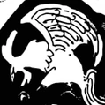
Piratas do Barba Rosa
Piratas BIG
Afiliados
Shichibukai
Territórios Protegidos
Após a morte de Barba Branca e os eventos da Guerra do Acerto de Contas, Teach passou a conquistar a maior parte dos antigos territórios do Barba Branca, com uma das exceções sendo a Ilha dos Homens-Peixe, que os Piratas da Big Mom tomaram para si, mas que depois se tornou parte do território dos Piratas do Chapéu de Palha. Foodvalten, outra das ilhas que pertenciam ao Barba Branca, esteve brevemente sob o controle dos Piratas do Barba Marrom, mas depois de terem sido derrotados pelos Piratas Hawkins, não se sabe se a ilha se tornou parte do território do Barba Negra.
A Ilha dos Piratas aparentemente está sob sua proteção, pois eles favoreceram suas festividades lá.
Outras Informações
Eles acreditam fortemente no destino e sorte, muitas vezes usando medidas cruéis para ver como destino joga fora. Um exemplo é Van Augur, que atirou em um grupo de gaivotas só para ver os destinados a morrer mortes lentas e dolorosas. Doc Q distribuiu maçãs explosivos no Mock cidade para ver quem teve o azar de comer os que explodiram. Mesmo depois de Luffy escapa via o Knock Up Stream, eles acreditam que a sua captura não estava destinado.
Todos os membros da tripulação parecem ser os seres humanos em massa, como Teach, Burgess, Pizarro e tiro, enquanto Augur, Laffitte, Doc Q, Shiryu e Devon são bastante alto também. Finalmente, Wolf é um gigante de tal dimensão que Little Remos Jr. e até mesmo Remos pálido em comparação e, portanto, é dito ser o maior ser que já andou o mundo.
Um aspecto interessante deste grupo é que, embora os membros iniciais mostrar lealdade para Teach, os ex-prisioneiros de Impel Down, não hesite em manifestar a sua opinião quando as coisas não saem como eles esperam ou assim o desejarem. Avalo Pizarro sequer uma vez pediu para substituir Barba Negra como o capitão ea única colaboração que têm mostrado até agora é a combinação de ataque de matar Barba Branca. No entanto, essa imponência é minimizada pela tripulação aproveitamento de Barba Branca sendo severamente enfraquecida em um nível bastante covarde ataque nove contra-um. Contrastando isso, o Chapéu de Palha exibem intensa lealdade para com o outro, apesar dos argumentos ocasionais. O Chapéu de Palha 'até mostrar um senso de honra para os seus adversários, melhorando o aspecto "homólogo mal" dos Piratas do Barba Negra.
Após a timeskip, a comparação "contrapartida" parece menos provável, como os Piratas do Barba Negra têm crescido em tamanho, a ponto de dividir sua equipe em várias unidades, como Piratas do Barba Branca, uma vez ter.
Referências
One Piece Mangá e Anime — Vol. 15 Capítulo 133 (p. 19-20) e Episódio 80, os Piratas do Barba Negra são mencionados pela primeira vez por Dalton e são vistos em sombras.
Vivre Card - One Piece Visual Dictionary, Saber of Xebec é nomeado.
One Piece Mangá e Anime — Vol. 25 Capítulo 234 (p. 16) e Episódio 151, Laffitte dá o nome da tripulação para os participantes de uma reunião sobre a substituição de Crocodile.
One Piece Mangá e Anime — Vol. 18 Capítulo 159 (p. 15) e Episódio 95, Barba Negra é mencionado por seu ex-comandante, Ace.
One Piece Mangá e Anime — Vol. 45 Capítulo 440 (p. 17) e Episódio 325, Barba Negra revela o motivo de ter permanecido na tripulação do Barba Branca e de ter assassinado Thatch.
One Piece Mangá e Anime — Vol. 59 Capítulo 576 (p. 5) e Episódio 485, Barba Negra diz a Sengoku que está saindo do posto de Shichibukai.
One Piece Mangá e Anime — Vol. 82 Capítulo 820 (p. 11-12) e Episódio 773, A Guerra do Acerto de Contas é mencionada.
One Piece Mangá e Anime — Vol. 66 Capítulo 650 (p. 7-8) e Episódio 570, Jinbe informa os Piratas do Chapéu de Palha sobre o avanço de poder e status de Teach.
One Piece Mangá e Anime — Vol. 15 Capítulo 134 (p. 2-4) e Episódio 80, Os Piratas Wapol deixam seu próprio reino e fogem sem sequer reagirem.
Os Piratas Heart (literalmente "Piratas do Coração") são uma novata tripulação infame e notável de piratas do North Blue e introduzidos no Arquipélago de Sabaody na época em que os Piratas do Chapéu de Palha chegaram lá há dois anos. O capitão deles, Trafalgar D. Water Law, é membro da Pior Geração e um ex-Shichibukai. Eles estão atualmente em uma aliança com os Piratas do Chapéu de Palha, Família Kozuki e Tribo Mink com o objetivo de derrubar Kaido dos Yonkou.
Membros da Tripulação
Piratas Heart
Trafalgar D. Water Law
Bepo
Shachi
Penguin
Jean Bart
Ikkaku
Uni
Clione
?????
?????
?????
?????
?????
?????
?????
Aliados e Afiliação
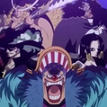
Piratas do Chapéu de Palha
Piratas Kid
Shichibukai
Família Kozuki
Aliança Ninja-Pirata- Mink-Samurai
Wolf
A tripulação é composta por 21 membros, todos, com exceção de dois, vestindo um traje de banho lilás claro com o Jolly Roger da tripulação estampado no lado esquerdo do peito, além do capitão e do Navegador. Quando Jean Bart se juntou à tripulação, ele apenas vestiu uma camisa preta depois de trocar as roupas de escravo, mas após o timeskipe, ele demonstrou ter adotado a mesma roupa que o resto da tripulação. Seu uniforme é notável por ser semelhante aos usados pelos escravos dos Nobres Mundiais que estavam trabalhando em Tequila Wolf, com as únicas diferenças notáveis sendo a cor e os Piratas Heart têm seu jolly roger em seus ternos. Eles também têm um único tripulante feminino. O anime mostra o número total de vinte e um, incluindo Law, mas alguns devem ser considerados não canônicos, como nunca foram vistos no mangá, especialmente porque um deles é Pandaman. Vários tripulantes sem nome fazem várias aparições, como aquela com uma máscara branca ou aquela com tranças; por outro lado, alguns fizeram apenas uma aparição em segundo plano.
Parece que Bepo, Shachi e Penguin são todos proficientes em artes marciais, nas quais todos parecem estilisticamente semelhantes. O capitão também é o médico a bordo.
Membros Desconhecidos
Um membro dos Piratas Heart usa o que parece ser uma máscara branca e tem cabelos castanhos claros espetados. Ele também empunha um machado em batalha. Ele fez aparições identificáveis nos capítulos 810, 815 e 951.Ele foi revelado e seu nome é Hakugan
Outro membro usa um chapéu de aba larga preto com uma parte superior plana e um cavanhaque preto e bigode. Ele fez aparições identificáveis nos capítulos 810, 815 e 951.
Um terceiro membro tem cabelos escuros e lisos que estão apontados para o lado direito. Ele fez aparições identificáveis nos Capítulos 810, 815 e 951.
Um quarto membro é um homem grande e gordinho, careca, com bigode. Ele fez aparições identificáveis nos Capítulos 810, 815 e 951.
Um quinto membro tem cabelos castanhos modelados em um coração. Ele também tem um cavanhaque triangular. Ele fez aparições identificáveis nos Capítulos 815 e 951.
Um sexto membro usa um boné amarelo de jornaleiro sobre os cabelos castanhos, separados em duas tranças. Ele fez aparições identificáveis nos Capítulos 810 e 815.
Um sétimo membro é um homem grande, com cabelos amarelos. Ele também empunha uma espada em batalha. Ele fez aparições identificáveis nos Capítulos 810 e 815.
Um oitavo membro tem cabelos presos e com formato de coração na parte superior. Ele só apareceu no Capítulo 815.
Um nono membro tem cabelos castanhos desgrenhados. Ele só apareceu no Capítulo 815.
Um décimo membro usa chapéu curto com uma parte superior curva e uma borda curta. Ele também carregava duas espadas nas costas. Ele fez apenas uma aparição identificável no Capítulo 807, mas foi mostrado no anime ao lado de toda a tripulação durante a introdução de Law. Ele também possivelmente apareceu no Capítulo 951.
Outros membros da tripulação parecem ser mostrados no mangá, mas continua sendo difícil identificá-los individualmente para determinar se são personagens diferentes.
Referências
SBS One Piece Mangá — Vol. 82.
One Piece Mangá e Anime — Vol. 51 Capítulo 498 e Episódio 392, Os Piratas Heart fazem sua estréia.
One Piece Mangá e Anime — Vol. 80 Capítulo 801 (p. 15) e Episódio 746, A recompensa de Law foi reativada e aumentada.
One Piece Mangá e Anime — Vol. 67 Capítulo 659 (p. 18) e Episódio 584, A recompensa pós-timeskip de Law é revelada.
One Piece Mangá e Anime — Vol. 51 Capítulo 498 (p. 18) e Episódio 392, Os 9 grandes novatos revelados.
One Piece Exibição — A recompensa de Bepo é revelada.
One Piece Mangá e Anime — Vol. 51 Capítulo 498 e Episódio 392.
One Piece Mangá e Anime — Vol. 67 Capítulo 659 e Episódio 584, É revelado que Law se tornou um Shichibukai.
One Piece Mangá — Vol. 82 Capítulo 819, A Aliança Ninja-Pirata-Mink-Samurai é formada.
One Piece Mangá — Vol. 81 Capítulo 810 (p. 4), Membros dos Piratas Heart se preparam para a batalha com Jack.
One Piece Mangá e Anime — Vol. 51 Capítulo 498 e Episódio 392, As Onze Supernovas são mostrados.
One Piece Mangá — Vol. 81 Capítulo 815, O número de membros que os Piratas Heart consistem é confirmado.
One Piece Mangá e Anime — Vol. 59 Capítulo 578 e Episódio 487, Trafalgar Law grita para Buggy para trazer Luffy porque ele é médico.
One Piece Mangá e Anime — Vol. 59 Capítulo 578 e Episódio 487, Law chega a Marineford em seu submarino.
One Piece Mangá e Anime — Vol. 59 Capítulo 580 e Episódio 489, Os Piratas Heart evitam os ataques de Aokiji e Kizaru.
One Piece Mangá e Anime — Vol. 59 Capítulo 581 e Episódio 490, Luffy está sendo curado com a ajuda do equipamento médico do submarino.
One Piece novel Law
One Piece Mangá — Vol. 80 Capítulo 805.
SBS One Piece Mangá — Vol. 84, A origem dos Piratas Heart revelada.
One Piece Mangá e Anime — Vol. 67 Capítulo 659 e Episódio 584.
One Piece Mangá e Anime — Vol. 70 Capítulo 700 e Episódio 629, Piratas Heart em Zou esperando por Law.
One Piece Mangá — Vol. 80 Capítulo 805.
One Piece Mangá e Anime — Vol. 68 Capítulo 668 e Episódio 594, Usopp afirma que a aliança é formada com os piratas Heart.
One Piece Mangá — Vol. 81 Capítulo 815.
One Piece Mangá — Vol. 82 Capítulo 819.
One Piece Mangá — Vol. 82 Capítulo 822.
One Piece Mangá — Vol. 91 Capítulo 913.
One Piece Mangá — Vol. 91 Capítulo 914.
One Piece Mangá — Vol. 91 Capítulo 916.
One Piece Mangá e Anime — Vol. 91 Capítulo 917 (p. 12) e Episódio 905.
One Piece Mangá e Anime — Vol. 91 Capítulo 918 e Episódios 906–908.
One Piece Mangá e Anime — Vol. 91 Capítulo 920 e Episódio 910.
One Piece Mangá — Vol. 91 Capítulo 921.
One Piece Mangá — Vol. 92 Capítulo 922.
One Piece Mangá — Vol. 92 Capítulo 924.
One Piece Mangá — Vol. 93 Capítulo 936.
One Piece Mangá — Vol. 93 Capítulo 939.
One Piece Mangá — Vol. 94 Capítulo 945 (p. 6-7).
One Piece Mangá — Vol. 94 Capítulo 951 (p. 5-7).
One Piece Mangá — Vol. 96 Capítulo 974.
One Piece Mangá e Anime — Vol. 78 Capítulo 780 (p. 6-7) e Episódio 721, Doflamingo enfureceu-se com o motivo de Law para o tema Corações.
Os Piratas Buggy é uma bando de piratas liderados pelo Capitão Buggy , que é um ex-membro da tripulação do Rei dos Piratas. Embora eles foram um dos primeiros adversários a ser derrotados pelos Piratas do Chapéu de Palha, eles continuam a ser pertinentes em One Piece. Seu objetivo atual é encontrar um tesouro lendário do capitão John.
Membros da Tripulação
Piratas Buggy
Capitão
Buggy
Membros da Equipe Principal
Mohji
Richie
Cabaji
Alvida
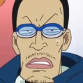
Galdino
Outros Membros
Corda bamba Frunan Bro
Corda bamba Funan Bro
Corda bamba Funan Bro
Fuwas Acrobáticos
Domingos Super-Humanos
Atendente Buggy Balls
Prisioneiros de Impel Down
Afiliação
Buggy's Delivery
Pirata Sem Nome
Entre os Piratas Buggy é um sem nome, de pele escura, de tamanho pequeno palhaço pirata que usa uma camisa amarela sem mangas e um chapéu de cone amarelo e vermelho-violeta listrado. Ele tem uma tira sobre cada olho, semelhante a cicatrizes, e lábios grossos. Ele é o único que carrega Bolas Buggy para o canhão quando é hora de atacar.
Sua importância está na dublagem questões: devido às referências raciais, no dub 4Kids, sua corrida foi alterado para caucasiana. Ele aparece pela primeira vez no capítulo 10 e Episódio 5.
Impel Down Condenados
Após a fuga de Buggy de Impel Down , muitos condenados colegas da prisão ouviu falar de seu passado como membro da tripulação Gol D. Roger . Eles perderam-se que ele era um mero aprendiz e, potencialmente, membro mais fraco a bordo. Consequentemente, eles vieram para admirá-lo como um pirata poderoso. Durante o curso da Batalha de Marineford , Buggy repetidamente mostra sua covardia, mas os presos mantidos confundindo-o como coragem e bravura, promovendo a sua admiração. Até o final da guerra, quando Buggy reunido com sua antiga equipe, os condenados se juntou à tripulação, admirando primeiro companheiro Mohji e Segundo Imediato Cabaji também.
Na verdade, estes novos recrutas são na sua maioria mais poderoso do que Buggy si mesmo, e que todos eles têm altas bênçãos em suas cabeças, mas de acordo com Mr. 3, que também se juntou à tripulação junto com esses outros presos eo único que vê através da fachada, suas orelhas são tão cheio de esperança de que eles estão meio surdo.
Referências
One Piece Manga e Anime - Vol. 1 Capítuo 8 e Episódio 4, A primeira aparência da tripulação
One Piece Manga e Anime - Vol. 3 Capítulo 20 e Episódio 8, a derrota de Buggy.
One Piece Manga e Anime - Vol. 4 Capítulo 35 capa e Episódio 45, Buggy é visto andando de Jangada Super Flashy para escapar de um peixe gigante.
One Piece Manga e Anime - Vol. 6 Capítulo 48 capa e Episódio 46, Buggy deixa a Ilha de animais raros na sua jangada reparada.
One Piece Manga eAnime - Vol. 6 Capítulo 50 capa e Episódio 46, A Jangada Super Flashy é destruído pela segunda vez.
One Piece Anime - Episódio 46, Jangada Flashy Super é nomeado no Inglês dub apenas.
Os Piratas Kid são uma infame e notável nova tripulação pirata introduzidos durante o Arco Arquipélago de Sabaody durante a época em que os Piratas do Chapéu de Palha chegaram lá, há dois anos. Por causa disso, eles fazem parte da Pior Geração. Como os Chapéus de Palha, essa tripulação tem duas recompensas acima de Bsymbol100,000,000. Ambos os membros tinham recompensas um pouco maiores do que os respectivos membros dos Piratas do Chapéu de Palha antes do timeskip. O seu capitão é Eustass Kid.
Membros da Tripulação
O aspecto mais significativo de sua aparência é que a maioria dos Piratas Kid, senão todos, têm aparências heavy metalesque. Além disso, muitos deles parecem usar couro de uma maneira ou de outra. Existem 4 membros nomeados na tripulação: Eustass Kid, Killer, Heat e Wire. Na casa de leilões, eles declararam que poderiam comprar alguém que chamou sua atenção. No entanto, parece que ninguém os interessou, pois eles não acabaram fazendo lances por ninguém.
Piratas Kid
Eustass Kid
Killer
Heat
Wire
Aliados
Piratas do Chapéu de Palha
Piratas Heart
Piratas Hawkins
Piratas On Air
Aliança Ninja-Pirata- Mink-Samurai
Esconderijo
Os Piratas Kid tinham uma ilha conhecida sob seu controle, que servia como base de operações. É uma pequena terra montanhosa, ilha de primavera, com árvores ainda maiores. No pé da maior montanha havia um castelo onde Kid, Hawkins e Apoo formaram sua aliança. Não se sabe o que aconteceu com a ilha após a derrota dos Piratas Kid.
Referências
One Piece Mangá e Anime — Vol. 51 Capítulo 498 e Episódio 392, Kid e Killer são apresentados.
One Piece Mangá e Anime — Vol. 68 Capítulo 677 e Episódio 603, As recompensas pós-timeskip para Kid, Killer, Apoo e Hawkins são reveladas.
One Piece Mangá e Anime — Vol. 51 Capítulo 498 (p. 18) e Episódio 392, Os 9 grandes novatos revelados.
One Piece Mangá e Anime — Vol. 51 Capítulo 500 e Episódio 394.
One Piece Mangá e Anime — Vol. 52 Capítulo 504 (p. 19) e Episódio 398, Os Piratas Kid resistem ao Haoshoku Haki de Rayleigh.
One Piece Mangá e Anime — Vol. 79 Capítulo 795 e Episódio 739, Kaido aparece antes da aliança.
Volume 10089 — Victoria Punk é nomeado.
One Piece Mangá e Anime — Vol. 59 Capítulo 581 (p. 3, 5) e Episódio 490, Os Piratas Kid navegam com Victoria Punk nos mares ao redor de Marineford.
One Piece Mangá e Anime — Vol. 52 Capítulo 503 e Episódio 397.
One Piece Mangá e Anime — Vol. 52 Capítulo 504 e Episódio 398.
One Piece Mangá e Anime — Vol. 52 Capítulo 504 e Episódio 399.
One Piece Mangá e Anime — Vol. 52 Capítulo 505 e Episódio 399.
One Piece Mangá e Anime — Vol. 52 Capítulo 506 e Episódio 399.
One Piece Mangá e Anime — Vol. 58 Capítulo 565 e Episódio 474.
One Piece Mangá e Anime — Vol. 59 Capítulo 581 e Episódio 490, Os Piratas Kid são vistos no pós-guerra.
One Piece Mangá e Anime — Vol. 60 Capítulo 594 e Episódio 511.
One Piece Mangá — Vol. 92 Capítulo 928.
One Piece Mangá e Anime — Vol. 83 Capítulo 837 (p. 9) e Episódio 795.
One Piece Mangá e Anime — Vol. 68 Capítulo 677 e Episódio 603.
One Piece Mangá — Vol. 79 Capítulo 793.
One Piece Mangá — Vol. 94 Capítulo 944.
One Piece Mangá — Vol. 82 Capítulo 824.
One Piece Mangá — Vol. 92 Capítulo 926 (p. 2).
One Piece Mangá — Vol. 93 Capítulo 937.
One Piece Mangá — Vol. 93 Capítulo 938 (p. 2-3).
One Piece Mangá — Vol. 94 Capítulo 944 (p. 11-17).
Os Piratas do Sol, às vezes conhecidos como Piratas Fishman, são um grupo do falecido Fisher Tiger. A equipe é notável por ter Jinbe e Arlong como parte de seus membros, Jinbe acabou se tornando o segundo capitão da tripulação, e mais tarde, um Shichibukai. Esta equipe se dividiu em três facções há onze anos: Os Piratas do Sol liderados por Jinbe, os Piratas do Arlong liderado por Arlong, e os Piratas do Macro liderado por Macro. Jinbe foi perdoado pelo Governo Mundial, quando Jinbe se tornou um Shichibukai, ele perdeu o perdão quando abdicou do título. Os Piratas Fishman se tornaram parte dos Piratas da Big Mom liderados por Big Mom.
Passado
Fundação
Pelo menos quinze anos antes da história atual, Fisher Tiger foi capturado pelos Nobres Mundiais e tornou-se um escravo. Depois de passar anos infernais como escravo ne Mary Geoise ele conseguiu escapar dos Nobres Mundiais, que o tratou de forma tão cruel. Além de ter escapado com sua vida, ele decidiu que não podia simplesmente abandonar todos os outros escravos e começou a libertá-los, incluindo Boa Hancock, suas duas irmãs, e muitos homens-peixe.
Como os cidadãos da Ilha dos Homens-Peixe ouviu falar sobre a notícia, muitos desistiram de suas ocupações atuais para se juntar aos Piratas do Sol, orgulhoso do ato de Tiger. Entre eles, Jinbe desistiu de ser um guarda real e Arlong levou seus piratas e juntou-se.
Como os Nobres Mundiais marca com "Casco do Dragão Crescente", não podem ser apagadas, Tiger marca sobre ela com o seu próprio jolly roger, um sol, que transformou o símbolo dos Piratas do Sol. Assim, sempre que um homem-peixe tinha a marca da escravidão sobre ele, seja nas costas, no peito ou braço, ele foi transformado em um sol, para apagar o fato de que eles tinham sido escravos. Como outros se juntou à tripulação, igualmente a marca foi aplicada para disfarçar que já foi um escravo ou quem não era, causando, assim, aos marinheiros serem incapazes de determinar quem eram escravos e não poderia recuperá-los devido à falta de provas. Mesmo que Tiger queria lutar contra os seres humanos a todo o custo, ele era contra o assassinato, dizendo que matar seria apenas torná-los como os seres humanos, embora alguns membros da tripulação, como Arlong em particular, era contra isso. Independentemente disso, a equipe respeitava Tiger suficiente para obedecer aos seus desejos.
Após cerca de três anos de pirataria, Tiger e Jinbe, ambos tiveram prémios atribuídos a eles, tornando-os conhecidos em todo o mundo. Quando chegaram em uma ilha, eles foram convidados a tomar uma criança ex-escravo, Koala, para sua ilha natal. Notavelmente, ela sorriu em todos os momentos, porque a morte significava a qualquer escravo, e ela trabalhava como um escravo, enquanto a bordo, durante todo o tempo de aceitar o abuso de Arlong. Isso tudo foi devido ao fato de que ela não podia distinguir entre o homem-peixe e seus ex-proprietários, o que levou Tiger marcá-la com o símbolo dos Piratas do Sol, apagando a marca de escravidão em suas costas e fazendo a garota finalmente acreditar que ela estava livre.
Os Piratas da Big Mom são uma infame e poderosa tripulação pirata liderada pela Yonkou Charlotte Linlin, mais conhecida como "Big Mom". Eles estão no controle da poderosa nação de Totto Land, com sua capitã governando-a como sua rainha, sendo que sua base de operações é a Ilha Whole Cake, a principal ilha do país.
Devido a suas ações e papel, eles são os principais antagonistas do Arco Ilha Whole Cake e um dos grupos antagonistas centrais da Saga Yonkou.
Membros da Tripulação
Piratas da Big Mom
Capitão
Charlotte Linlin
Capitãs Homies
Napoleon
Prometheus
Zeus
Generais da Doçura
Charlotte Cracker
Charlotte Smoothie
Charlotte Katakuri
Família Charlotte
Charlotte Perospero
Charlotte Daifuku
Charlotte Oven
Charlotte Opera
Charlotte Counter
Charlotte Cadenza
Charlotte Cabaletta
Charlotte Nusstorte
Charlotte Basskarte
Charlotte Noisette
Charlotte Moscato
Charlotte Mont-d'Or
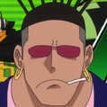
Charlotte Saint-Marc
Charlotte Dacquoise
Charlotte Snack
Charlotte Bavarois
Charlotte Kato
Charlotte Brownie
Charlotte Raisin
Charlotte Mascarpone
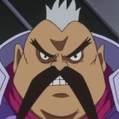
Charlotte Yuen
Charlotte Decuplets
Charlotte Dosmarche
Charlotte High-Fat
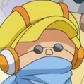
Charlotte Zuccotto
Charlotte Kanten
Charlotte Compo
?????
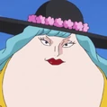
?????
Charlotte Compote
Charlotte Mondée
Charlotte Amande
Charlotte Hachée
Charlotte Effilée
Charlotte Custard
Charlotte Angel
Charlotte Brûlée
Charlotte Broyé
Charlotte Mash
Charlotte Cornstarch
Charlotte Mozart
Charlotte Poire
Charlotte Prim
Charlotte Marble
Charlotte Myukuru
Charlotte Mapie
Charlotte Joconde
Charlotte Panna
Charlotte Joscarpone
Charlotte Nutmeg
Charlotte Akimeg
Charlotte Allmeg
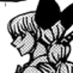
Charlotte Harumeg
Charlotte Fuyumeg
Charlotte Pudding
Charlotte Flampe
Combatentes
Pekoms
Cavaleiro Tamago
Torre Capone Bege
Bispo Bobbin
Outros Membros
Streusen
Diesel
Mobile
Tablet
Laurin
?????
?????
?????
?????
?????
?????
?????
Soldados Xadrez
Soldado King
Soldado Queen
Soldado Rook
Soldado Knight
Soldado Bishop
Soldado Pawn
Outros Homies
Queen Mama Chanter
Nitro
Rabiyan
Randolph
Noble Croc
Rei Baum
Floresta da Sedução
lesma do Mar Doce
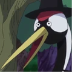
Sapo do Mar Doce
?????
?????
Subordinados
Piratas Fire Tank
Piratas do Sol
Aliados e Afiliações
Caesar Clown
Reino Germa
Recrutamento
Para que uma tripulação navegue sob o nome da Big Mom, os novos candidatos devem ter suas linhagens ligadas à sua família (que consiste na própria Linlin, 43 maridos, 39 filhas e 45 filhos); Isso requer um casamento político. A fundação e infra-estrutura dos Piratas da Big Mom é, portanto, construído em torno de sua linhagem. O processo de recrutamento da tripulação é que Linlin casaria seus filhos, principalmente sem tomar suas considerações na escolha, para reforçar sua tripulação pirata, assim servindo para expandir sua família também. Seus filhos deixaram há muito tempo a esperança de encontrar um amor de sua escolha, sabendo que não podem desafiar a exploração da mãe na escolha de seus casamentos
No caso de uma noiva ou noivo de uma família externa haver múltiplas afiliações existentes, eles devem cortar aqueles que são externos ao acordo político com Big Mom. Este foi o caso de Sanji, cuja participação dos Piratas do Chapéu de Palha era uma lealdade fora do acordo entre o patriarca de Vinsmoke e a matriarca de Charlotte, e que, portanto, tinha de ser cortado.
Organização
Como mencionado, os Piratas da Big Mom são construídos em torno da linhagem de sua capitã, no entanto, é desconhecido quantos, de seus filhos são membros diretos de sua tripulação, como Cracker, Smoothie, Opera, Galette e Mont d'Or sendo os únicos casos confirmados até agora. No entanto, a maioria de seus filhos, especialmente os mais velhos, parecem estar a par e afiliados com as operações da tripulação. Os membros da tripulação, como os filhos de seus capitães, chamam Big Mom, de "Mama", embora a maioria a tema, como ela fica com raiva e violenta quando ela está descontente (especialmente quando ela não recebe o doce que ela quer).
Como a maioria das equipes de Yonkou, os Piratas da Big Mom são organizados em torno de um grupo central de piratas que navegam diretamente sob Big Mom, e várias equipes subordinadas que trabalham diretamente em suas ordens. Até agora, além da Big Mom, os Três Comandantes Doces parecem ter a mais alta autoridade, respeito e capacidade de luta entre a tripulação, havia originalmente quatro Comandantes Doces, até Snack ser derrotado por Urouge e sua posição ser removida. Derrotar um Comandante Doce resulta em uma fúria da Big Mom, como ela iria enviar seu exército, dos quais inclui vários piratas infames e poderosos (alguns deles seus próprios filhos), para lidar com o responsável.
Subordinadas
Os Piratas da Big Mom tem várias tripulações subordinadas, alguns dos quais já eram famosos grupos de piratas em suas próprios ordens. Estes incluem os Piratas Sol, captaneado por um ex-Shichibukai, Jinbe, e pelos Piratas Firetank, captaneado por um da pior geração, Capone Bege. Por exigências da Big Mom, o vice-capitão dos Piratas Sol casou com sua 29ª filha, enquanto o capitão do Piratas Firetank se casou com sua 22ª filha.
Germa 66, um exército do Submundo comandado pela Família Vinsmoke, está atualmente no processo de se tornar subordinado da Big Mom. Como parte de uma troca de acordos com Vinsmoke Judge, Big Mom procura o acesso à tecnologia avançada do exército, já Judge, procura o uso de suas forças para retomar o controle de sua família sobre o North Blue. Este negócio deve ser selado com um casamento (pendente) entre o terceiro filho de Judge e a 35ª filha da Big Mom.
Territórios
Os Piratas Big Mom têm os seguintes territórios conhecidos sob a sua proteção:
Ilha Whole Cake
Ilha dos Homens-Peixe
Referências
One Piece Mangá e Anime — Vol. 66 Capítulo 651 (p. 5) e Episódio 570, Pekoms é apresentado, e chama a Linlin de "Mama".
One Piece Mangá e Anime — Vol. 86 Capítulo 860 (p. 14) e Episódio 830.
One Piece Mangá e Anime — Vol. 83 Capítulo 836 (p. 15) e Episódio 798.
One Piece Mangá e Anime — Vol. 84 Capítulo 846 (p. 14) e Episódio 812.
One Piece Mangá e Anime — Vol. 89 Capítulo 894 (p. 15) e Episódio 869.
One Piece Mangá e Anime — Vol. 87 Capítulo 877 (p. 16) e Episódio 849.
One Piece Mangá e Anime — Vol. 85 Capítulo 850 (p. 7) e Episódio 816.
One Piece Mangá e Anime — Vol. 66 Capítulo 652 (p. 13) e Episódio 572.
One Piece Mangá e Anime — Vol. 85 Capítulo 855 (p. 2) e Episódio 823.
One Piece Mangá e Anime — Vol. 84 Capítulo 845 (p. 5) e Episódio 809.
Vivre Card - One Piece Visual Dictionary (Card #0748).
Vivre Card - One Piece Visual Dictionary (Card #0010).
One Piece Mangá e Anime — Vol. 81 Capítulo 812 (p. 13) e Episódio 763.
Vivre Card - One Piece Visual Dictionary (Card #0976).
Vivre Card - One Piece Visual Dictionary (Card #0984).
One Piece Mangá e Anime — Vol. 86 Capítulo 868 (p. 9) e Episódio 838.
Os Piratas do Roger eram a tripulação do falecido Rei dos Piratas, Gol D. Roger, e foram a única tripulação conhecida a chegar em Laugh Tale, o fim do Novo Mundo na Grand Line. Eles enfrentaram o Vice-Almirante Garp várias vezes, e eram fortes rivais dos Piratas do Barba Branca.
A tripulação navegou pela Grand Line juntos, e as coisas que eles fizeram eram consideradas lendas. Eles chegaram até Skypiea e à ilha final da Grand Line, Laugh Tale, em seu navio, o Oro Jackson. Roger foi uma das figuras mais famosas de sua época, enquanto o nome de seu imediato, Silvers Rayleigh, é amplamente conhecido e famoso também.
A tripulação navegou pela Grand Line juntos, e as coisas que eles fizeram eram consideradas lendas. Eles chegaram até Skypiea e à ilha final da Grand Line, Laugh Tale, em seu navio, o Oro Jackson. Roger foi uma das figuras mais famosas de sua época, enquanto o nome de seu imediato, Silvers Rayleigh, é amplamente conhecido e famoso também.
A tripulação foi introduzida pela primeira vez por Buggy, quando ele lembrou da época em que ele e Shanks eram aprendizes na tripulação. Seu capitão, Roger, é o primeiro personagem apresentado na série.
Membros da Tripulação
Piratas Roger
Liderança
Capitão Gol D. Roger
Imedianto Silvers Rayleigh
Outros Membros
Scopper Gaban
Seagull Guns Nozdon
Sunbell
Taro
Doringo
Petermoo
Millet Pine
Ganryu
CB Gallant
Donquino
Mr. Momora
Moon Isaac Jr.
Yui
Rangram
Mugren
MAX Marks
Spencer
Bankuro
Blumarine
Erio
Rowing
Jacksonbanner
Yamon
Shanks
Buggy
Crocus
Kozuki Oden
Ex-Membros
Kozuki Toki
Inuarashi
Nekomamushi
Douglas Bullet
Após a Dissolução
Roger se entregou aos marinheiros, e eles o executaram em sua cidade natal, Loguetown, 24 anos atrás. Os ex-aprendizes de Roger, Shanks e Buggy, estavam presentes em sua execução, e depois eles se separaram para formar suas próprias tripulações, os Piratas do Ruivo e os Piratas Buggy. 18 anos depois, Shanks seria reconhecido como um dos Yonkou. Buggy e sua tripulação estavam ativos no East Blue até dois anos antes do presente, quando eles entraram na Grand Line e Buggy se tornou um Shichibukai devido em grande parte à sua história com Roger.
Rayleigh se aposentou da pirataria e atualmente trabalha como revestidor de navios no Arquipélago de Sabaody, embora faça excursões frequentes. Crocus voltou para Reverse Mountain para cuidar de Laboon. Oden foi morto em Wano cinco anos após a separação da tripulação, pois sua busca para abrir as fronteiras de Wano encontrou oposição do shogun de Wano Kurozumi Orochi e do Yonkou Kaido. O paradeiro e status dos outros Piratas do Roger são desconhecidos. As recompensas da tripulação ainda estão ativas, com o Governo Mundial não estando disposto a cancelá-las antes que os membros morram.
Referências
One Piece Mangá e Anime — Vol. 3 Capítulo 19 (p. 7-18) e Episódio 8, Buggy fala sobre seus dias com Shanks como aprendizes. Nota: a tripulação não foi mencionada como sendo os Piratas do Roger no momento do capítulo.
One Piece Mangá e Anime — Vol. 45 Capítulo 431 (p. 16) e Episódio 313, é dito que Garp encurralou Roger inúmeras vezes.
One Piece Mangá e Anime — Vol. 25 Capítulo 233 (p. 12) e Episódio 145, Buggy menciona Barba Branca como o único capaz de lutar no mesmo nível de Roger.
One Piece Mangá — Vol. 1 Capítulo 1 (p. 3), Tema We Are!, o discurso e a morte de Roger são vistos.
One Piece Mangá — Vol. 96 Capítulo 967.
One Piece Mangá — Vol. 95 Capítulo 957 (p. 17), a recompensa de Roger é revelada.
One Piece Mangá e Anime — Vol. 52 Capítulo 512 (p. 2) e Episódio 404.
One Piece Mangá — Vol. 96 Capítulo 966.
One Piece Mangá — Vol. 96 Capítulo 965 (p. 16-17).
One Piece Mangá e Anime — Vol. 0 Capítulo 0 e Episódio 0.
One Piece Mangá e Anime — Vol. 25 Capítulo 233 (p. 13) e Episódio 151.
One Piece Mangá e Anime — Vol. 45 Capítulo 431 (p. 16) e Episódio 313.
One Piece Mangá — Vol. 95 Capítulo 957.
One Piece Mangá e Anime — Vol. 61 Capítulo 597 e Episódio 516.
One Piece Mangá e Anime — Vol. 52 Capítulo 511 (p. 18-19) e Episódio 404.
One Piece Mangá — Vol. 96 Capítulo 970.
One Piece Mangá e Anime — Vol. 3 Capítulo 19 e Episódio 8.
One Piece Mangá e Anime — Vol. 56 Capítulo 549 e Episódio 452.
One Piece Mangá e Anime — Vol. 70 Capítulo 700 e Episódio 629.
One Piece Mangá e Anime — Vol. 61 Capítulo 603 (p. 5) e Episódio 523, Roger e Rayleigh se encontram.
One Piece Mangá e Anime — Vol. 3 Capítulo 19 (p. 7) e Episódio 8, um navio usado pelos Piratas do Roger é visto no flashback de Buggy.
One Piece Mangá e Anime — Vol. 61 Capítulo 603 (p. 5-6) e Episódio 523, Roger e Rayleigh se encontram pela primeira vez.
One Piece Mangá e Anime — Vol. 52 Capítulo 506 e Episódio 400.
One Piece Mangá — Vol. 96 Capítulo 968.
One Piece Mangá e Anime — Vol. 70 Capítulo 700 e Episódio 629.
One Piece Mangá e Anime — Vol. 51 Capítulo 498 e Episódio 392.
One Piece Mangá e Anime — Vol. 82 Capítulo 818 e Episódio 770.
Os Piratas Donquixote são uma tripulação pirata liderada por Donquixote Doflamingo. Eles também são conhecidos como a Família Donquixote.
Membros da Tripulação
Piratas Donquixote
Capitão
Donquixote Doflamingo
Oficiais Elite
Trebol
Diamante
Pica
Corazon(Vergo)
Corazon (Donquixote) Rosinante
Oficiais do Exército de Trebol
Sugar
Jora
Violet
Oficiais do Exército de Diamante
Lao G
Senor Pink
Machvise
Dellinger
Oficiais do Exército de Pica
Gladius
Buffalo
Baby 5
Outros Oficiais
Monet
Outros Membros
Bellamy
Trafalgar D. Water Law
?????
?????
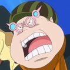
?????
?????
?????
Kyuin
?????
?????
?????
Subordinados
Piratas Bellamy
Caesar Clown
Disco
Aliados
Piratas das feras
Ibusu
Gran Tesoro
Organização
A equipe é dividida em três subdivisões , com o próprio Doflamingo tendo o domínio completo sobre todos. Membros mais poderosos e/ou de confiança de Doflamingo é permitido sentar-se em assentos representados pelos quatro naipes de cartas.Coração, Clube, Diamante,e Spade.O assento Coração estava reservada para o Trafalgar Law,apesar de sua deserção fez vago.Os assentos Clube,Diamante,e Spade pertencem a Trébol , Diamante, e Pica,respectivamente. Abaixo destes três oficiais de elite estão outros dez oficiais, que são divididos entre as três elites , servindo-os em divisões que cada especializam em um determinado aspecto para missões.Estes oficiais e Doflamingo está no comando dos mais de 2000 soldados,o que inclui os gostos de Bellamy ,dentro Dressrosa. Além dos dez diretores e três elites , havia dois outros oficiais no estrangeiro:Monet e Vergo.Não se sabe qual a divisão (se houver) Monet pertencia antes de sua morte, mas Vergo era um oficial de elite igual na classificação para Trébol,Diamante e Pica, apesar de não ocupar um dos quatro lugares.Bellamy tinha sido oferecido a chance para se tornar um oficial,ele deve ganhar a Corrida Coliseu ou assassinar Monkey D. Luffy,mas suas falhas constantes levou a ser julgado como um todo.
Exercito Trébol
O Exército Trébol é uma subdivisão dos piratas Donquixote, liderados por Trébol,que é especializado em missões que requerem os usuários com poderes especiais. Ambos Violeta e Jora são oficiais neste exército.Violeta eventualmente desertou e é declarada uma traidora para atacar os outros membros quando eles detidos Sanji. Sugar é um oficial especial deste exército, como ela pode transformar as pessoas em brinquedos e está protegida pelo próprio Trébol.
Exercito Pica
O Exército Pica é uma subdivisão dos piratas Donquixote, liderados por Pica, que é especializada em missões de comando.Gladius,Buffalo, e Baby 5 são oficiais neste exército.
Exercito Diamante
O Exército Diamante é uma subdivisão dos piratas Donquixote, liderados por Diamante, que é especializada em missões de combate.Lao G,Senor Pink,Machvise e Dellinger são oficiais neste exército. Todos os quatro oficiais desta divisão estão reinando participantes da Corrida Coliseu, e é dito que eles têm 100% de vitória sempre que entrar. Esta é a única divisão para ter quatro oficiais.
Referências
One Piece Mangá e Anime — Vol. 25 Capítulo 233 (p. 18-19) e Episódio 151, Doflamingo makes his debut.
Os Piratas das Feras são uma tripulação pirata extremamente infame e poderosa liderada por Kaido dos Yonkou, Eles estão sediados no País de Wano, especificamente com sede em Onigashima.
Nos últimos vinte e cinco anos, a tripulação consolidou seu poder em Wano, que ocupou por meio de uma aliança com o shogun do país, Kurozumi Orochi. Atualmente, os Piratas das Feras firmaram uma nova aliança com os Piratas da Big Mom, outra tripulação de Yonkou, com planos de conquistar o mundo; esses planos, de acordo com o "Plano da Nova Onigashima" de Kaido, eventualmente viram Orochi ser considerado desnecessário e traiçoeiramente assassinado por Kaido durante o último Festival do Fogo.
Devido às suas ações e funções, eles são os principais antagonistas do Arco Zou e Arco País de Wano, e um dos grupos antagonistas centrais da Saga Yonkou.
Membros da Tripulação:
Piratas das Feras
Governador-Geral
Kaidou
Grandes Astros
King
Queen
Jack
Tobiroppo
X Drake
Page One
Util
Who's Who
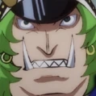
Sasaki
Astros Principais
Sheepshead
Ginrummy
Basil Hawkins
Holed'em
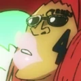
Speed
Briscola
Hamlet
Fourtricks
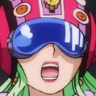
DoBon
Babanuki
Daifugo
Solitaire
Bao Huang
Mizerka
Poker
Gifters
Batman
Gazelleman
Mouseman
Snakeman
Rabbitman
Sarahebi
Alpacaman
Madilloman
Dachoman
Trio the Grip
Bearman
Numbers
Inbi
Fuga
Zanki
Jaki
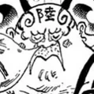
Goki
Rokki
Nangi
Hatcha
Kunyun
Juki
Samurai
Fukurokuju
Daikoku
Fujin
Raijin
Hanzo
Chome
Jigoku Benten
Bishamon
Yazaemon
Kazekage
Sarutobi
Hotei
?????
?????
?????
?????
Outros
Scotch
Scratchman Apoo
Kamijiro
Pleasures
Waiters
Hihimaru
Tripulação Subordinadas
Piratas Drake
Piratas On Air
Piratas Hawkins
Aliados e Afiliados
Piratas da Big Mom
Família Kurozumi
Piratas Donquixote
Organização
Visão Geral
Os Piratas das Feras são uma enorme organização pirata, um exército de cerca de 20,000- homens organizado ao longo de linhas hierárquicas simples, mas rígidas, efetivamente capaz de operar como uma frota enorme. Kaido como o Governador-Geral está no topo, com domínio completo sobre todos. Diretamente abaixo dele, classificam seus três oficiais executivos (os Grandes Astros ou "Calamidades") aos quais respondem um grande número de oficiais de segundo escalão (os Shinuchi) que são liderados por alguns poucos selecionados (o mais forte deles, chamado de Tobiroppo), com os últimos ranks compostos por legiões de ranks, que são agrupados em três divisões: os cerca de 500 Gifters de "elite" (todos concedidos poderes da Zoan Artificial nos esforços de Kaido para criar a tripulação mais forte do mundo composta inteiramente de usuários de Akuma no Mi), ainda mais Pleasures (aqueles que não conseguiram ganhar habilidades comendo frutas Zoan Artificiais), e, finalmente, os soldados de infantaria de nível mais baixo (e provavelmente os mais numerosos), os Waiters. Os Numbers (Imitações artificiais da raça gigante antiga) são ainda outro grupo especial, embora não se saiba com que precisão, se é que se encaixam na hierarquia.
Para reforçar suas forças, Kaido está sempre à procura de novos lutadores fortes para recrutar à força, mais notavelmente parecendo ter como alvo ilustres capitães piratas do Novo Mundo, cujas tripulações se verão totalmente integradas aos Piratas das Feras com o tempo. Dos desejados recrutas, aqueles que se submetem voluntariamente a Kaido são bem-vindos, enquanto aqueles que resistem e se levantam contra ele são esmagados, capturados e, em seguida, continuamente torturados e forçados ao trabalho penal até que seu espírito se rompa e eles se submetam também.
Três tripulações lideradas por membros da Pior Geração — os Piratas Drake, Piratas On Air, e Piratas Hawkins — em um ponto foram subordinados aos Piratas das Feras, com X Drake e Basil Hawkins servindo como Shinuchi (Drake anteriormente, e também tendo sido um dos Tobiroppo, que contam pelo menos com outros ex-capitães piratas entre eles), e Apoo agindo como um "informante".
Os Piratas das Feras seguem um sistema de meritocracia baseada na força, em que os membros da tripulação terão uma classificação mais elevada quanto maior for a sua capacidade de luta. É possível, até encorajado, entre eles desafiar aqueles que ocupam um cargo mais alto do que o seu, a fim de tirá-lo deles; isso é mostrado com o Tobiroppo, que, com a aprovação de Kaido, pode lutar contra um Grande Astro atuante e, em caso de vitória, tomar seu lugar. O inverso também é verdadeiro, onde especialmente os escalões superiores podem procurar eliminar aqueles classificados abaixo deles se assim o desejarem, como mostrado com Queen expressando sua intenção de matar um dos Tobiroppo e criar um assento aberto (embora isto acabou por ser devido à traição de Drake). Como resultado deste sistema, um ar de hostilidade muito aberto é gerado na tripulação, especialmente entre os mais altos, onde aqueles da mesma categoria podem se ver como rivais ou aqueles de classificação diferente podem tentar matar (e substituir) um outro. Alguns podem não mostrar interesse em responder aos seus superiores por considerá-los meros obstáculos aos seus objetivos de subir na hierarquia.
A maior parte da tripulação, condizente com seu tema "bestial", tende a ser feroz, selvagem e sanguinária no comportamento, com o próprio Kaido temido pela maioria de seus homens, especialmente por sua embriaguez violenta e oscilações de humor. A maioria dos Piratas das Feras se veste de forma pouco semelhante aos guerreiros bárbaros ou Viking com um tema de cor escura, vestindo capacetes de metal e gorros de couro, cintos de couro e tiras amarradas especialmente em torno de seus torsos (os primeiros geralmente vistos com fivelas de caveira), peludos e mantos/capas com acolchoamento de ombro, flautas forradas de pele, jaquetas de couro abertas, luvas, pulseiras, calças muitas vezes acolchoadas nos joelhos e feitas de couro também, com pontas e tachas frequentemente vistas; a maioria dos membros do sexo masculino fica com o peito nu e a maioria das mulheres usa sutiãs e calcinhas do estilo mencionado. Como seu general chifrudo, muitos membros da tripulação carregam chifres de algum tipo em suas cabeças nuas ou adereços ornamentais (por exemplo, capacetes) que têm chifres, enquanto outros são vistos com presas, entre outras características animais (muitas vezes cortesia de seus poderes SMILE), e uma grande parte da tripulação é mostrada com cabelos esportivos que são uma combinação de longos, selvagens ou soltos.
De outra forma, digno de nota, em comparação com outras grandes tripulações de piratas (por exemplo, os Piratas Donquixote ou Piratas do Barba Branca), é que há uma proporção razoavelmente mais equilibrada de homem para mulher nas fileiras inferiores dos Piratas das Feras, enquanto a maioria dos outros grandes grupos de piratas normalmente veem mulheres apenas nos escalões superiores, se é que veem. A proporção de gênero permanece um pouco próxima até mesmo nas categorias mais altas, com muitos Shinuchi e dois Tobiroppo sendo mulheres.
Os Piratas das Feras ocupam Wano em geral para usar como sua base de operações e, especificamente, estão sediados em Onigashima, onde o próprio Kaido em seu castelo e os superiores da tripulação tendem a residir, e onde toda a tripulação e seus aliados, especialmente Orochi e seus seguidores, se reúnem durante o Festival do Fogo anual.
Alianças
Por mais de duas décadas, os Piratas das Feras trabalharam intimamente com Kurozumi Orochi e seu governo em Wano, ajudando a impor seu governo opressor; Orochi se gabou de não temer ninguém, nem mesmo o Governo Mundial, com Kaido o apoiando. Algumas das forças de Kaido, de Waiters a Gifters, foram encontradas estacionadas e trabalhando em Wano ao lado dos samurais de Orochi, por exemplo, protegendo, monitorando e administrando cidades de maneira geral, e tomou medidas agressivas contra qualquer um que se opusesse publicamente ou apenas falasse mal do shogun. Além disso, eram os Piratas das Feras que dirigiam os campos de trabalho de Udon, onde milhares dos culpados de rebelião contra Orochi foram mantidos até sua libertação. Foi mostrado que os Piratas das Feras podiam ser ordenados diretamente por Orochi ou pediu ajuda pelos aliados do shogun, mostrado quando "Kyoshiro" solicitou que Queen enviasse assassinos atrás de alguém que havia desafiado a Família Kyoshiro. Alguns Piratas das Feras foram colocados permanentemente na Capital das Flores para ajudar Orochi da maneira que ele quisesse.
Por meio de sua aliança com o shogunato Kurozumi, os Piratas das Feras passaram a desfrutar de acesso total aos imensos recursos naturais de Wano (ou seja, seus depósitos de minério) com os quais possuem armas de alta qualidade, incluindo Pedra do Mar-baseadas em produção em massa em fábricas instaladas em todo o país. As referidas armas que os Piratas das Feras exportavam originalmente em troca da importação em massa das frutas SMILE fabricadas por Doflamingo (além do Governo Mundial usando o ex-Shichinukai para obter acesso ao referido armamento), e foi esse comércio secreto que permitiu a Kaido manter seu poder marcial e domínio no Novo Mundo; assim, Doflamingo era o parceiro comercial mais importante de Kaido e vice-versa.
No meio do Arco País de Wano, os Piratas das Feras entraram em uma aliança com os Piratas da Big Mom após a vinda de Big Mom para Wano, que foi formalmente anunciado durante o último Festival do Fogo. O referido anúncio foi seguido pelo próprio Kaido trazendo sua aliança com o shogunato de Orochi a um fim abrupto, executando Orochi e declarando seu "Plano da Nova Onigashima". Este projeto veria os Piratas das Feras assumirem o controle total sobre Wano para torná-lo um "império pirata" sem lei (um paraíso para piratas do qual o filho de Kaido, Yamato, seria o novo shogun), isso para se preparar para uma guerra mundial em que os Piratas das Feras lutariam ao lado dos Piratas da Big Mom, buscariam adquirir as Armas Antigas para usar na referida guerra e, finalmente, tentariam reivindicar o próprio One Piece. No processo, Kaido deu aos seguidores de Orochi o ultimato para ficar do lado dos piratas ou serem mortos, levando-os imediatamente a jurar lealdade a Kaido.
No geral, as forças originalmente sob o número de Orochi em torno de 10,000 — os 5,000 samurais liderados por Hotei e os 5,000 ninjas liderados por Fukurokuju — chegando a um total de 30,000 pessoas quando eles e os Piratas das Feras estão totalmente reunidos (e todos os quais estão atualmente à disposição de Kaido, após a morte de Orochi e disse dez mil jurando lealdade a Kaido).
Estrutura da Tripulação
Grandes Astros
Os Grandes Astros são os principais executivos da tripulação, atrás apenas do próprio Kaidou em classificação, autoridade e destreza de batalha, que servem como confidentes e protetores escolhidos a dedo por Kaidou.
Os três homens que ocupam este posto - King, Queen e Jack - são informalmente referidos como as Calamidades por seus respectivos epítetos, cada um correspondendo a um tipo de calamidade. Jack é chamado de "a seca" por sua destrutividade geral, que torna qualquer terra que ele ataque em ruínas, como se uma seca tivesse ocorrido. Queen "das Pragas" é chamado assim por sua experiência em criar e transformar várias doenças artificiais em armas. King "dos Incêndios" é chamado assim porque ele pode criar fogo de seu corpo e usá-lo para potencializar seus ataques.
Cada Grande Astro possui um poder de Akuma no Mi do tipo Zoan Ancestral, aumentando significativamente sua destreza física: Jack pode se tornar um mamute peludo, Queen um braquiossauro, e King um pteranodonte. Todos os três também são vistos carregando e/ou lutando com armas brancas.
Enquanto Queen é humano, Jack é um homem-peixe e King parte de uma tribo atualmente desconhecida que se pensava estar extinta. Como o próprio Kaido, os Grandes Astros são conhecidos por seu tamanho, superando o humano médio; O primeiro confronto de Luffy com Kaido fez com que alguns dos Piratas das Feras presumissem que ele teria um tamanho semelhante a um Grande Astro antes de colocar os olhos nele. Em termos de habilidade de combate, os Grandes Astros se provaram muito temíveis: Jack, por exemplo, foi capaz de lutar um contra um por cinco dias inteiros contra os dois governantes (e os guerreiros mais fortes) da Tribo Mink que se revezavam contra ele a cada doze horas, sem nunca estar sob ameaça de derrota.
Até agora, Jack e Queen foram mostrados para comandar suas próprias embarcações pessoais, portando figuras de proa com base em suas respectivas habilidades Zoan. Os ditos dois também são apresentados como governantes de fato das províncias de Wano, com Jack no controle de Kuri enquanto Queen dirige Udon (especificamente a mina de prisioneiros lá), e eles tendem a vir e se envolver pessoalmente em acontecimentos notáveis lá. Um Grande Astro pode ser enviado para liderar missões essenciais no exterior, como Jack sendo enviado com muitos subordinados para encontrar e recuperar Raizo em Zou e tentando resgatar Doflamingo do comboio da Marinha que o carregava para Impel Down. Geralmente, enquanto os Grandes Astros parecem compartilhar um senso de rivalidade semelhante a um irmão, eles são ferozmente leais ao general e cumprem suas ordens da melhor maneira possível. Como a maioria da tripulação, todos eles também residem em Onigashima.
Tobiroppo
Os Tobiroppo são um grupo especial composto pelos seis Shinuchi mais fortes. Atualmente, o grupo consiste de apenas cinco pessoas: Page One, Ulti, Who's Who, Black Maria, e Sasaki, com o antigo sexto membro, X Drake, tendo sido deserdado da tripulação.
Diretamente abaixo dos Grandes Astros na hierarquia, os Tobiroppo foram especificado como o próximo na fila para se tornar um Grande Astro caso um atual morra, com alguns deles (expressamente Who's Who e Sasaki) desejando matar um Grande Astro eles próprios e usurpar seu posto. Drake, Who's Who e Sasaki eram todos anteriormente ativos como capitães de sua própria tripulação, com Drake, ao invés de leal à tripulação, tendo sido um espião da Marinha, algo eventualmente descoberto e levando Drake a ser declarado inimigo.
Além da Zoan Alossauro de Drake, dois outros Tobiroppo são conhecidos por possuir habilidades de Zoan Ancestral baseadas em dinossauros; Page One pode se tornar um Espinossauro e Ulti um Paquicefalossauro. Além de Drake empunhar um machado e um florete na batalha, três outros são mostrados para usar armas: Who´s Who e Sasaki carregam uma espada cada e Ulti empunha uma estrela da manhã com pontas afiadas.
Os deveres dos Tobiroppo incluem o assassinato daqueles que ousaram atacar os Piratas das Feras ou, por extensão (anteriormente) associados do shogun Orochi (por exemplo, a Família Kyoshiro), com um Grande Astro despachando-os no processo (embora alguns dos Tobiroppo sejam conhecidos por ignorar chamadas dos Grandes Astros). Durante o último Festival do Fogo, os Tobiroppo foram aqueles a quem Kaido confiou a tarefa de encontrar e recuperar seu filho Yamato.
Shinuchi
Os Shinuchi são os oficiais de segunda classe da tripulação - a maioria dos quais são Gifters de elite - que são responsáveis por liderar os Waiters, os Pleasures e os Gifters inferiores.
Pessoas poderosas que se juntam à tripulação podem atingir esse nível em um curto espaço de tempo, como Hawkins, e X Drake foi até capaz de se tornar um Tobiroppo. Isso também mostra que ter os poderes de uma fruta SMILE não é um pré-requisito para a posição.
Além dos Tobiroppo, a força dos Shinichi parece variar de indivíduo para indivíduo e depende de contra quem eles estão lutando. Por exemplo, Sheepshead foi facilmente defendido por Brook e derrubado por um único ataque de Sanji, Holdem foi derrotado com um golpe de Luffy, e Dobon foi facilmente derrotado por Eustass Kid e Luffy quando ambos estavam algemados com Kairoseki. Hawkins, por outro lado, se manteve firme contra outros da Pior Geração, ameaçando facilmente Roronoa Zoro e Luffy simultaneamente e colidindo com Trafalgar Law.
Shinuchi são normalmente as autoridades de tripulação mais altas nas cidades e vilarejos de Wano (fora da Capital das Flores) onde os oficiais de alta classe residem e, portanto, são geralmente aqueles que tratam de questões de menor escala que acontecem nas proximidades. A Cidade de Bakura, por exemplo, tem três Shinuchi estacionados lá. Existem Shinuchi que ocupam outros cargos na região, como Babanuki sendo o guardião das minas de prisioneiros da região de Udon, e os companheiros Shinuchi Daifugo, Solitaire e Dobon trabalhando sob Babanuki como vice guardas.
Gifters
Os Gifters são a infantaria de elite da tripulação, composta por quase 500 usuários de Zoan Artificial. Tendo comido SMILEs, eles têm habilidades e atributos do tipo Zoan. Apenas 10% das pessoas que comeram SMILEs ganham poderes e são, portanto, consideradas "gifted/dotadas" (daí o seu nome).
Os ditos poderes do tipo Zoan permitem que seus portadores transformem partes de seus corpos, por ex. suas cabeças ou membros, em partes do corpo animal não correspondentes. Alguns Gifters têm atributos animais permanentes, em alguns casos assumindo a forma de apêndices extras (até mesmo cabeças de animais sencientes), e podem ganhar certas capacidades corporais associadas ao animal em questão (por exemplo, sentidos aprimorados). O quão poderosa uma dada transformação acaba sendo é considerada uma aposta, e apenas aqueles com domínio avançado de sua habilidade são capazes de desativar sua transformação à vontade (embora isso pareça raro). Na tripulação, os Gifters parecem seguir codinomes correspondentes ao seu poder animal, em vez de seus nomes reais, e têm pares de chifres pretos em suas cabeças.
Os Gifters são formidáveis, especialmente em números cumulativos, e alguns, possivelmente muitos, costumavam ser piratas independentes que um dia sonharam em se tornar o Rei dos Piratas, antes de serem espancados e quebrados em submissão por Kaido e introduzidos em suas fileiras. Com a derrota de Doflamingo e a captura de Caesar Clown, a formação de seu exército de Gifters de Kaido chegou a um fim abrupto, deixando-os permanentemente reduzidos aos seus números atuais.
Pleasures
Os Pleasures são os soldados de infantaria de nível médio da tripulação, apenas acima dos Waiters. Eles são os muitos infelizes que não conseguiram obter qualquer característica animal após comer uma fruta SMILE, estando nos 90% que comeram frutas insatisfatórias (e como para cada Gifter há nove Pleasures, pode-se inferir que o número de Pleasures está em torno de 4,500, embora qualquer número específico não tenha sido mencionado ainda).
Os Pleasures não apenas falharam em ganhar habilidades ao comer os frutos defeituosos; devido aos seus efeitos colaterais, eles sempre sorriem e riem independentemente das circunstâncias, mesmo quando se machucam (daí seu nome). Além de serem incapazes de expressar qualquer outra emoção, eles compartilham a fraqueza padrão da Akuma no Mi de serem incapazes de nadar. Todos eles têm chifres brancos únicos em suas cabeças e foram vistos, servindo como batedores de patrulha em Wano.
Waiters
Os Waiters são os soldados de infantaria de baixo nível da tripulação que ainda não comeram os SMILEs, ainda aguardando sua chance de ganhar poderes de animais (daí seu nome). Seu papel ou deveres específicos na tripulação, ao contrário dos Pleasures ou Gifters, são desconhecidos.
Os primeiros Waiters apareceram na Mina de Prisioneiro de Udon para lutar contra Luffy e Hyogoro em uma partida de sumô e empunharam várias espadas. No entanto, nenhum desses Waiters em particular tinha uma força notável, pois todos foram nocauteados pelo Haoshoku Haki de Luffy. Ao contrário dos Pleasures e Gifters, nenhum deles tem chifres, significando que não comeram SMILEs.
Numbers
Os Numbers são um grupo de dez ex-sujeitos da ciência que passaram por experimentos de Gigantificação em Punk Hazard a fim de recriar a raça de gigantes antigos, mas foram considerados fracassados por algum motivo. Eles também foram mencionados como tendo sido comprados por Kaido em vez de se juntarem a ele, tornando-os semelhantes a armas vivas. Vinte anos atrás, eles já estavam presentes entre as forças de Kaido.
Se eles têm um papel específico nos Piratas das Feras, além de serem uma força bruta de combate, é desconhecido, mas eles são infames o suficiente para serem conhecidos e temidos pelas crianças em Hakumai. Pelo menos alguns deles parecem empunhar clavas com cravos semelhantes ao kanabo de Kaido, e geralmente possuem uma força imensa que condiz com seu tamanho. Em termos de aparência, eles não são apenas mais massivos do que os gigantes normais, mas também têm chifres como os gigantes antigos naturais, e alguns são mais desumanamente proporcionados do que outros. Está implícito que todos os Numbers têm problemas com a bebida.
Territórios Protegidos
Os Piratas das Feras são conhecidos por terem os seguintes territórios sob seu controle:
Ilha do Inverno não nomeada protegida por Scotch e onde o revolucionário Gaburu e seu exército operavam.
País de Wano, aliado à Família Kurozumi após usurpar o anterior shogunato há vinte anos.
Onigashima, a base oficial de operações dos Piratas das Feras.
Referências
One Piece Mangá e Anime — Vol. 61 Capítulo 595 (p. 4) e Episódio 513.
One Piece Mangá e Anime — Vol. 81 Capítulo 808 (p. 4) e Episódio 757, a caixa de informações de Jack mostra o nome da tripulação.
One Piece Mangá e Anime — Vol. 82 Capítulo 818 (p. 16) e Episódio 770, Kin'emon revela que os Piratas das Feras estão residindo em Wano.
One Piece Mangá e Anime — Vol. 82 Capítulo 819 (p. 5) e Episódio 771, Kin'emon primeiro explica a situação em Wano.
One Piece Mangá — Vol. 95 Capítulo 954 (p. 15).
One Piece Mangá — Vol. 98 Capítulo 985 (p. 10-19).
One Piece Mangá e Anime — Vol. 79 Capítulo 795 (p. 9) e Episódio 739, a Jolly Roger dos Piratas das Feras é vista no cinto de Sheepshead.
One Piece Mangá — Vol. 95 Capítulo 955 (p. 8).
\
One Piece Mangá — Vol. 92 Capítulo 922.
One Piece Mangá e Anime — Vol. 70 Capítulo 698 (p. 16) e Episódio 625.
One Piece Mangá e Anime — Vol. 82 Capítulo 824 (p. 10) e Episódio 779, Os Gifters são explicados como os usuários SMILE da tripulação.
One Piece Mangá e Anime — Vol. 94 Capítulo 943 (p. 10-12) e Episódio 941.
One Piece Mangá — Vol. 97 Capítulo 983 (p. 7).
One Piece Mangá — Vol. 98 Capítulo 989 (p. 6-7), Big Mom revela a origem dos Numbers.
One Piece Mangá e Anime — Vol. 92 Capítulo 926 (p. 11-13) e Episódio 919.
One Piece Mangá — Vol. 95 Capítulo 954 (p. 4-6), Hawkins revela a Law como ele acabou como um membro dos Piratas das Feras.
One Piece Mangá e Anime — Vol. 79 Capítulo 793 (p. 11) e Episódio 736, Drake é revelado por ter se aliado aos Piratas das Feras.
One Piece Mangá e Anime — Vol. 82 Capítulo 821 (p. 19) e Episódio 774, Apoo é visto se dirigindo a Kaido.
One Piece Mangá e Anime — Vol. 91 Capítulo 911 (p. 19) e Episódio 894, Hawkins é revelado como um Shinuchi dos Piratas das Feras.
One Piece Mangá e Anime — Vol. 91 Capítulo 912 (p. 6) e Episódio 894, Drake se juntou e se tornou um Shinuchi um ano após a Batalha de Marineford.
One Piece Mangá — Vol. 97 Capítulo 979 (p. 13).
One Piece Mangá — Vol. 98 Capítulo 990 (p. 14-15), Drake é descoberto como um traidor e declarado inimigo.
One Piece Mangá — Vol. 98 Capítulo 991 (p. 8).
One Piece Mangá — Vol. 97 Capítulo 979, Kaido, King e os Tobiroppo discutem a hierarquia da tripulação.
One Piece Mangá — Vol. 97 Capítulo 980, Queen motiva Gifters a atacar Luffy e Zoro, prometendo-lhes um lugar entre os Tobiroppo.
One Piece Mangá — Vol. 97 Capítulo 981 (p. 10).
One Piece Mangá e Anime — Vol. 81 Capítulo 808 e Episódio 779.
One Piece Mangá e Anime — Vol. 92 Capítulo 930 e Episódio 924.
One Piece Mangá — Vol. 97 Capítulo 978 (p. 9-11), Kin'emon concede trajes disfarçados de Piratas das Feras para a rebelião.
One Piece Mangá — Vol. 97 Capítulo 978 (p. 12-14).
One Piece Mangá e Anime — Vol. 93 Capítulo 935 (p. 8-9) e Episódio 930, Muitas mulheres são vistas entre os Waiters, Pleasures e Gifters em Udon.
One Piece Mangá e Anime — Vol. 91 Capítulo 921 (p. 3-4) e Episódio 911.
One Piece Mangá — Vol. 95 Capítulo 958 (p. 6-7).
One Piece Mangá e Anime — Vol. 92 Capítulo 929 (p. 12) e Episódio 922.
One Piece Mangá e Anime — Vol. 91 Capítulo 912 (p. 19) e Episódio 897.
One Piece Mangá e Anime — Vol. 91 Capítulo 914 (p. 11) e Episódio 900, Batman ataca Tsuru por falar mal de Orochi.
One Piece Mangá e Anime — Vol. 91 Capítulo 914 (p. 16) e Episódio 901, Holdem e Speed são mencionados por Kiku como sendo Shinuchi.
One Piece Mangá e Anime — Vol. 91 Capítulo 915 (p. 2-11) e Episódios 901–902.
One Piece Mangá e Anime — Vol. 91 Capítulo 916 (p. 12-18) e Episódio 903.
One Piece Mangá e Anime — Vol. 91 Capítulo 917 (p. 2-13) e Episódios 904–905.
One Piece Mangá — Vol. 93 Capítulo 940 (p. 16).
One Piece Mangá — Vol. 94 Capítulos 948–949, A Mina de Prisioneiros de Udon é assumida pelos prisioneiros rebeldes.
One Piece Mangá — Vol. 95 Capítulo 959 (p. 10-13), Orochi enviou Piratas das Feras após a rebelião.
One Piece Mangá e Anime — Vol. 92 Capítulo 927 (p. 15) e Episódio 920.
One Piece Mangá e Anime — Vol. 91 Capítulo 919 (p. 6-7) e Episódio 909, Sarahebi is shown.
One Piece Mangá e Anime — Vol. 91 Capítulo 912 e Episódio 897.
One Piece Mangá e Anime — Vol. 92 Capítulo 922 (p. 4) e Episódio 913.
One Piece Mangá e Anime — Vol. 92 Capítulo 924 (p. 3) e Episódio 915.
One Piece Mangá e Anime — Vol. 92 Capítulo 929 (p. 11) e Episódio 922.
One Piece Mangá — Vol. 98 Capítulo 986 (p. 6).
One Piece Mangá e Anime — Vol. 81 Capítulo 808 (p. 4) e Episódio 757, Jack's position and rank are revealed.
One Piece Mangá e Anime — Vol. 91 Capítulo 921 (p. 13) e Episódio 912, The All-Star rank is first mentioned.
One Piece Mangá — Vol. 98 Capítulo 991 (p. 13), Kaidou notes how Jack, as his handpicked All-Star, is one of his most valued men.
One Piece Mangá — Vol. 101 Capítulo 1023 (p. 4), Queen notes how he, King, and Jack are the Disasters which protect Kaidou.
One Piece Mangá e Anime — Vol. 92 Capítulo 925 (p. 16-17) e Episódio 918.
One Piece Mangá e Anime — Vol. 94 Capítulo 948 (p. 6) e Episódio 947.
One Piece Mangá — Vol. 101 Capítulo 1022 (p. 14-15), King ataca com fogo, e Marco conta como ouviu falar de uma raça criadora de fogo que costumava morar na Red Line.
One Piece Mangá e Anime — Vol. 81 Capítulo 807 (p. 17) e Episódio 757.
One Piece Mangá — Vol. 94 Capítulo 945 (p. 17-18).
One Piece Mangá e Anime — Vol. 92 Capítulo 930 (p. 10-11) e Episódio 924.
One Piece Mangá e Anime — Vol. 81 Capítulo 810 (p. 3,5) e Episódio 759.
Vivre Card - One Piece Visual Dictionary (Card #0960), Informações sobre Jack são reveladas.
One Piece Mangá — Vol. 94 Capítulo 951 (p. 14-15).
One Piece Mangá e Anime — Vol. 92 Capítulo 924 (p. 13) e Episódio 916.
One Piece Mangá e Anime — Vol. 81 Capítulo 810 (p. 5-6) e Episódio 760.
One Piece Mangá e Anime — Vol. 80 Capítulo 801 (p. 11) e Episódio 746, O Mamute é visto pela primeira vez.
One Piece Mangá — Vol. 94 Capítulo 947.
One Piece Mangá e Anime — Vol. 91 Capítulo 917 (p. 8-9) e Episódio 905.
One Piece Mangá — Vol. 94 Capítulo 945.
One Piece Mangá e Anime — Vol. 81 Capítulo 808 e Episódio 757.
One Piece Mangá e Anime — Vol. 80 Capítulo 806 (p. 9) e Episódio 755, Wanda revela que Jack realmente atacou o comboio que transportava Doflamingo e foi derrotado.
One Piece Mangá e Anime — Vol. 97 Capítulo 978 (p. 15-17) e Episódio 982, "Tobiroppo" é romanizadO, e os Tobiroppo são introduzidos.
One Piece Mangá — Vol. 95 Capítulo 956 (p. 11-13).
One Piece Mangá — Vol. 97 Capítulo 983 (p. 11).
One Piece Mangá — Vol. 97 Capítulo 982 (p. 12).
One Piece Mangá — Vol. 98 Capítulo 987 (p. 9-10).
One Piece Mangá e Anime — Vol. 93 Capítulo 932 (p. 9) e Episódio 926.
One Piece Mangá — Vol. 97 Capítulo 979 (p. 14), Kaido incumbe o Tobiroppo de encontrar Yamato.
One Piece Mangá — Vol. 97 Capítulo 978 (p. 14), "Shinuchi" é romanizado, e os Numbers são ouvidos festejando durante o Kagura Dourado.
One Piece Mangá e Anime — Vol. 91 Capítulo 915 (p. 5) e Episódio 901, Holdem estreia.
One Piece Mangá e Anime — Vol. 79 Capítulo 795 (p. 7-8) e Episódio 739.
One Piece Mangá e Anime — Vol. 91 Capítulo 917 (p. 13-17) e Episódio 905.
One Piece Mangá e Anime — Vol. 92 Capítulo 926 (p. 16-17) e Episódio 919.
One Piece Mangá e Anime — Vol. 91 Capítulo 913 (p. 2-13) e Episódio 899.
One Piece Mangá e Anime — Vol. 91 Capítulo 918 (p. 7-10) e Episódio 906.
One Piece Mangá e Anime — Vol. 93 Capítulo 935 (p. 2-7) e Episódio 930.
One Piece Mangá e Anime — Vol. 81 Capítulo 808 (p. 10) e Episódio 757, Os Gifters aparecem primeiro e são nomeados.
One Piece Mangá e Anime — Vol. 94 Capítulo 943 (p. 11) e Episódio 941.
Vivre Card - One Piece Visual Dictionary (Card #0961), O domínio avançado de Sheepshead sobre seu poder explicado.
SBS One Piece Mangá — Vol. 97 (p. 172).
One Piece Mangá e Anime — Vol. 81 Capítulo 808 (p. 8-9) e Episódio 757, Os Pleasures mostrados pela primeira vez aparecem e são derrotados pelos Minks.
One Piece Mangá e Anime — Vol. 94 Capítulo 943 (p. 10-11) e Episódio 941.
One Piece Mangá e Anime — Vol. 91 Capítulo 911 e Episódio 893.
One Piece Mangá e Anime — Vol. 94 Capítulo 943 (p. 10) e Episódio 941.
One Piece Mangá — Vol. 93 Capítulo 936 (p. 7-9).
One Piece Mangá — Vol. 96 Capítulo 973 (p. 5), Um Number é mostrado há 20 anos.
One Piece Mangá — Vol. 95 Capítulo 954 (p. 13-15), Os Numbers fazem sua estréia.
One Piece Mangá — Vol. 97 Capítulos 977–978 (p. 16-17, 14), Numbers são vistos festejando durante o Golden Kagura.
One Piece Mangá — Vol. 97 Capítulo 981 (p. 6-7), Hatcha aparece pela primeira vez atacando o Kid.
One Piece Mangá — Vol. 71 Capítulos 704 e 705, História de Capa: O Kehihihihi de Caribou no Novo Mundo Vol. 24-25, Scotch sufoca a rebelião pela força.


.jpg)


.jpg)
.jpg)